Some of The Answer Gang have seen complaints on open forums that there is documentation for iptables and netfilter, but it is all scary and hard to read. Looking at them myself, can't blame folks for thinking this.
So, we'd like to see an article on this topic - aimed at practical examples, doing some ordinary basic types of things - but with the orindary Joe Linuxer in mind, not people who wanted to learn yet another scripting language (tm) just to know their dialup outbound won't get invaded by blue meanies seeking to "sploit" the systems on their inner network. (Other examples welcome too.)
If you think you can make putting up the defense shields "Just A Little More Fun" - check out our article submission guidelines, and then mail articles@lists.linuxgazette.net, we'd love to hear from you.
Thu, 29 Apr 2004 21:15:10 -0700
Ben Okopnik, Thomas Adam, Heather Stern (The Linux Gazette Editor Gang)
Question by Mike Orr (mso from oz.net)
This is my last issue editing Linux Gazette. Ben Okopnik has agreed to take
over producing LG starting in May.
[Thomas]
Great! Out with the young, in with the.....
So you're all gonna DIE!!! DOOM IS AT HAND!!!
[Heather]
Mike's taking some well earned time off to play computer games.
[Ben]
Weren't you supposed to wait until the tranquilizers kicked in? Boy,
just look at all those capitals and exclamation points; a sure sign of
somebody who wears his pants on his head, according to Terry Pratchett.
(I don't care if it's an accurate reflection of reality; they still
shouldn't let you out on the streets like this and scare the innocent
passerby.)
Fortunately, Heather Stern and Thomas Adam have agreed to step in and
"handle" Ben whenever he starts reaching for those dark sunglasses
[Heather]
"Handle" hehehe. Ben keeps leaving his sunglasses in the TAG lounge
whenever he's split one too many
ginger beers
with us in the lounge. We make sure to sneak them back into his shirt
pocket when he's not looking.
and that
slingshot he bought from a pirate in the Caribbean last year when his
helicopter.... Oh, that's another topic.
[Ben]
He certainly was a pirate. I mean, jeez - $2.00 for for a single
Slingshot when a whole bottle of Cruzan rum was going for $1.70???
Robbery pure and simple, I tell ya.
Slingshot
3 oz. Peach Schnapps
3 oz. Gin
3 oz. sour mix
dash of Grenadine
Open a coconut, pour off all but a couple of oz. of the water. Add
ingredients, mix, and serve.
Anyway, if you see me reaching for one, join in.
Anyway, Ben will be reading your
articles and putting together the zine, and Heather and Thomas will be helping
out as necessary besides continuing their jobs as TAG Editors.
[Thomas]
I know I've been saying it for months, there will be articles from me.
It's this thing called 'real life' that annoys me.
I came back to LG in October to help recreate the production infrastructure at
its new webhost and to make sure it was done right. Now linuxgazette.net is
established and is humming along nicely. At the same time, other priorities in
my life have intruded.
[Thomas]
That's to be expected. You've been doing this for a good number of years.
Python is proving to be a greater interest to me than
Linux, and it has somehow become a good intersection for my work,
[Thomas]
I know what you mean there - I am finding Ruby is engulfing me.
volunteer, and
personal interests. I need time to study more Python packages for work, I want
to play with
Twisted
(a versatile Internet services framework), and we're organizing a
Northwest Python Sprint
in Seattle in June. Plus there are some personal Python projects I've been
wanting to do. Linux has become more of an environment I'm in rather than
something to focus on. My next Linux project will be installing
Gentoo
, which two coworkers are using and
recommend. It looks like it has come a long way since I looked at it last
year.
I've also been reprioritizing some other things in my life. I've given up
wrestling -- with my joint inflexibility I'm just not going to be able to be
serious about it, and I think after two years I've gained about as much from
it as I can. Now I want to get into boxing. Not really seriously, but just
for fun. But first I gotta get in shape for it, and first I have to spend a
month or two earning $$ like mad to get over my current cash-flow problem. So
I'll have plenty to do. I'm also taking yoga more to help with the
flexibility.
[Thomas]
I never was one for contact sports such as boxing and wrestling. Heck, I
am not even a sports fan.
But I always did have a certain amount of
admiration for people who can box.
It has been a great inspiration working with the staff and contributors to LG
over the years. The amount of dedication and goodwill people put into LG is
astounding.
[Heather]
Awww shux. :D
[Thomas]
Likewise, Mike. It has been a pleasure and indeed an honour to have worked
with you. It has been a pleasure both in terms of Linux, but also getting
to know more about yourself, and the culture that surrounds you. I only
hope that we continue our discussions - I find them most enlightening.
When I started editing LG in 1999, I was afraid every month that
not enough articles would come in. But somehow they always did. Eventually I
learned to just expect it.
[Ben]
[wry grin] I guess I'll just have to take that attitude over and carry
on with it. It's sure seemed like an edgy proposition at times.
[Heather]
For which we are all very grateful to you dear readers who decide to
take up the pen... or electrons... and put your new spin on things into
the shared world of Linux Gazette
I'm grateful to The Answer Gang, to Mick for doing
News Bytes, to Javier and Shane and Jon for contributing their cartoons, and
to many authors of high-quality technical articles who keep sending stuff to
LG again and again. You've all shown what volunteers can do if they work
together.
[Ben]
Hey, it's a labor of love. We may all have our own reasons for being
here, but in the end it comes down to us putting out a quality 'zine
that benefits a large community; that's not small potatoes. It sure
gives me a good feeling to know that our efforts help people, that LG is
acting as a force multiplier for our advice, tips, and so on.
[Thomas]
More importantly, we're still showing that.
I hope you won't be
leaving permenently. I hope you will still be TAG member, contributing
when you can. You're always welcome.
I read your Python article in the
LJ (I actually ordered it in from America) - very impressive. I'll still
stick to Ruby though. :D
Now I'll go to the TAG lounge and open a cold bubbly ginger-beer. Then I'm
going home to make my favorite dish,
pho
and earl green tea. (That's green, not gray.)
[Ben]
Mike, it's certainly been a hell of an experience working with you all
these years. We've had fun and we've been through some edgy times
together, a bunch of sweet and only a little of the sour, and I'll
always think of you as a friend (despite the fact that you're giving
away all my secret plans, ya ratfink.)
Wherever your life takes you, you have my best wishes for the future.
[Thomas]
Best of luck to you, Michael. As I say, keep in touch, and most of all,
thank you.
If you ever find yourself in England (or indeed, if I am
ever likely to be in America anytime soon) be sure to let me know.
[Heather]
Hee hee, if you're about to be in America sometime Thomas, you'd better
let us know, we'll have a TAG meetpoint and a party.
We will miss ya, Sluggo. Hopefully not too much though - thanks for
agreeing to stay on as a contributing editor, and maybe we'll see an
article from you once in a while. Mike, it's been a grand time working
with you, so don't be a strange... oh, alright, be as strange as you
need to be, but like Thomas says, do keep in touch :D
This page edited and maintained by the Editors of Linux Gazette HTML script maintained by Heather Stern of Starshine Technical Services, http://www.starshine.org/
Anyhow, I know it's simple, but I can't figure it out for the life of me. I
use tcsh for my shell. How would I alias a command to do a CD to a
directory of choice, and then automagically do an ls.
Long Hand:
# cd [directory]
# ls -lag
[JimD]
alias foo 'cd \!*; ls -lag'
... works for me. If you give it one argument that's where you are
chdir()'d to. No argument and you cd ~ and get a listing of your
home directory. More args and you get an error from cd; just like
you'd expect from the cd command.
Note that aliases are subject to history expansion. That's why I'm
using \!* --- which expands into foo's argument list whenever the
foo alias is used.
Note that bash aliases DO NOT perform history expansion. Thus you'd
use a shell function instead:
function foo () { cd $1; ls -lag; }
(Where either the word function or the () are hints that this is a
function definition --- but both can be used, too).
[laugh] Man, that is seriously whacky. I like it. Let's see, where can
we slide it into LG?...
The problem is, of course, the time factor. I mean, if anybody was to
listen to them and type it all in, they'd be almost two years out of
date by the time they finished! - not to mention seriously sore fingers
and a sleep debt the size of the US national one.
-- Ben
KDE and GNOME on Linux (Topologilinux3.1.0)doesn't take up the whole
display of my Toshiba 2400 laptop. Linux in text mode does take up the
whole screen. How do I get the GUIs to do the same? With thanks, JKC.
[Please don't give deatils of my email address or full name but
otherwise I'm very happy for this rather lame question to be posted.
Thanks. JKC]
As a gentle reminder, yes gentle readers, if you want to be anonymous
either as someone asking a question or offering good answers, we're
fine by that - just let us know!
-- Heather
While this is for Toshiba 2410, it should also work for 2400.
Thank you Kapil.
[Kapil]
You're welcome. However, ...
Please send your replies to the list rather than the person who
responded to your question so that other people with similar questions
can benefit from your experience.
I've had a look at the site and it has some good ideas.
[Kapil]
Thorsten Hass has created this very useful site for Toshiba Laptop
(Satellite) info for Linux --- perhaps this should be in LG Tips.
Ok, so we took a while getting it into the mix, but done!
-- Heather
I did, however, find that the XF86Config-vesa worked (renamed to
XF86Config). Seems the Toshiba 2400 likes this Vesa configuration. This
config doesn't seem to have any other unwanted side effects; I copied
it from the default and there doesn't seem to be any localisation
issues - we'll see.
[Kapil]
It is nice that "vesa" does what you want. However, note that the "vesa"
configuration is not "accelerated" which means that window
movement/mapping and animations will seem sluggish. Perhaps you could
try one of the other XF86config files at the site and tell us (on this
list) what happened.
The problem may also be with the "nv" driver and you could try out the
drivers from nVidia as explained at the site.
In any case, now that XFree86 supports generic "vesa" it is certainly
much easier to get a basic working GUI under Linux than it used to
be---at least for newer machines.
This refers back to the
article idea
in issue 93's mailbag.
-- Heather
The section should specifically address the typical daily activities
of the Windows user and how to configure Linux to operate like
Windows.
I have a little and uncompleted table (but this is the most completed
list of that kind in Internet...), with nearly the same purpose
.
First column - the activity, second column - Windows way, third
column - Linux way :D.
Hi, you don't really describe how you boot from the second disk.
Do you switch this in the bios?
I will just give you two hints.
In my case I use to power down and use the removable drive switch to disable
the disk in the primary bay. Then the secondary starts up.
I can imagine that this dous not work in all systems.
If you use lilo on the first disk to startup lilo in the mbr of the
second disk then you might
consider putting lilo in hdb1 and not in hdb.
In reference to
LG 93, Help Wanted #5
by Joao Coelho, where I asked any ppp/chat script experts to please chime in.
-- Heather
Heather:
I agree with you on this question. Use a front end. My personal
favorite is diald. The documentation has an example of how to use a
pool of numbers. You may not need the control that diald offers however
it does solve the reader's problem.
I know that this stumps people from time to time, Knoppix itself is cool but using it for a rescue environment is a little sneakier.
First and foremost unless your idea of rescue is "find a file and ftp or scp it to somewhere else" kill the darn automounter. Run:
/etc/init.d/autofs stop
Wait a few moments then make sure to use 'ps was' or 'ps fax' and make sure it is good and properly dead. Use 'kill -9' on the automounter if you have to.
Next thing is, you can use ctrl-alt-f1 or even ctrl-alt-F2 to get a prompt; over on tty1 just press ENTER and it's there already. When I'm really deep into thoughts of rescue the whole gorgeous GUI thing just gets in my way. If you'd rather stay in the GUI though, you'll have to launch konsole (or an xterm) and run 'sudo su -' ... and it won't ask a password. (That's also a warning to those of you who use Knoppix just because it makes Linux easy to show to your pals...)
Then I cd /mnt and see a gazillion (that's a technical term) hd* and sd* entries. I use e2label religiously to label my volumes, or create them with -L options so they have them; RH distros make the volumes with labels; other distros might too. So you've a pretty good chance of getting some useful answer out of this:
cd /mnt
for i in hd* sd* ; do echo -n "$i: " ; e2label /dev/$i ; done
Yeah, yeah, I know, if you use reiser or somehting that won't help, but the heartening thing is knoppix supports extra journaling fs' too, including XFS (Klaus merges SGI's XFS patches into his kernels).
I also mkdir my own mountpoint - my favorite /mnt/pt (mount point, get it?) or /mnt/t (for target) and mount my poor benighted root fs there, then read its etc/fstab for what else to mount. Then you can safely chroot in and tweak lilo, or install that important package. If you are installing packages, some need /proc mounted to behave well... and then you'll need to recall to umount /proc in there too. Don't forget to umount all this stuff yourself before you reboot.
Last but not least, if you use knoppix to do a local install, get rid of or at least properly configure that annoying little MTA smail. Almost nobody will relay newuser@knoppix and that's what your outbound mail will look like it's from if you don't do something about it. Compared to that, fending off vestiges of German configuration is more charming than troublesome
Back around mid-April 2003 I posted a reply to a querant about md5sum's, and
mentioned that I often use Ed Olson's WinMD5 on one or another of my Win
boxes when downloading and burning Linux distro .iso's (got to get that
Linux system up for doing that sort of thing!) Ed sent me the
following message regarding my original posting, and announcing the
availability of his latest version of WinMD5 (v2.0), so I thought I
would pass it on. I've been using v1.1 of his program for awhile now,
with no problems at all.
BTW his v2.0 requires M$ .NET Framework (preferably v1.1 or newer)
installed to run. It's available via Windoze Update on Win98/2K/XT systems.
HTH
- Ken Dodge
It's still the current version, it's still a nice little app, and I'm
sure those of you downloading a Linux ISO to the beast of Redmond before
burning your shiny new CD would kind of like to know you aren't making a
coaster. So here it is.
-- Heather
I'm the author of WinMD5. I noticed a whole bunch of hits against my
website referred by a posting to linux-list from April, and found your
name. (The link in your email
http://www.ssc.com/pipermail/linux-list/2003-April/055560.html contains
a spurious period, so my server was getting a lot of 404s).
i am trying to use telnet to learn more about internet protocols but
every time i try to make a connention through the telnet i get a refuse message
says couldnot make a connection to the web site.
what i do is fisrt make a connection to the internet then i put in the host name
the following address "whois.internic.com" and leave the term type and every
thing else as it was but i also fail
[K.-H.]
Well --- learning more about internet protocols is certainly worthwhile
especiall since you've no clue. On the other hand this mailinglist you sent
your question to is called *linux-questions-only*. Why would you guess
somebody has a funny E-Mail adress like that? Because we are network and
internet protocol specialists?
For further asking question at this place consider reading:
AND recommended places to find information like search linuxgazette, google
or the Linux documentation project www.tldp.org which incidentially has a
network administrator guide which explains many basics:
i tried another addresses but invain i tried google.com,yahoo.com but no
connection was there maybe the proxy setting affect the telnet
connection??????????/
[K.-H.]
Certainly -- proxy is for the http (maybe ftp) protocol. This protocol
definition includes a port number, usually 80. telnet on the other hand is a
service usually not available to everybody and usually connecting to port 23
-- which is not covered by standard proxy services.
Since you wanted to study network protocols you probably wanted to telnet
to the webserver on any of the machines you tried.
That could be done by:
telnet www.whatever.com 80
the 80 specifies that you do not want to connect to the regular telnet port
(which should not be available on any big webserver as its a gaping security
hole) but to the http-server which is listening on port 80.
Maybe this gets you started in the right direction (i.e. start reading
documentation).
please help me to answer this question as i read in the website you have a
fabulous information about this things
thanks very much...............
You're welcome. To others reading this - the trick works for any purely
text based protocol, as long as it only needs one port, and you have
your hceat card at hand. I use it to test my mailservers for clients
before taking them out of the lab, using telnet to port 25 and using raw
SMTP or ESMTP commands.
-- Heather
as of yesterday i fugured out my PCMCIA problem and have now configured
my wi-fi card and everthiing seemed to be going well untill i launched
the browser and i dont seem to be passing the IP adress to the browser,
if i have an ip address at all. and my real question is, is there a ip
configuration utility for red hat 9 where i can see if i indeed have a
ip address that was DHCP to my machine and if so where can i find this
program.
thanks for your time
Benjamin Vargas
[K.-H.]
That question is completely confused. Read
http://www.linuxgazette.net/tag/ask-the-gang.html
to get an idea how to ask a good question. It would help to tell what
netscape is doing/not doing. proxy setting in netscape. output of
/sbin/route -n (one of the tools you ask for) would also help in finding out
whats the problem.
Generally:
Your computer has an IP-adress attached to each of its interfaces. It is
127.0.0.1 on interface lo (loop back), it might have ethernet connections
like eth0 with local IP-adresses (e.g. 10.10.10.1) and once you've dialed out
via modem/ISDN you've a [i]ppp0 interface which got a dynamic IP adress
assigned. That might be any IP-adress.
The IP-traffic is directed by routing, thats's the roadmap which tells the
kernel where to send each IP packet depending on the IP. A packet to
127.0.0.1 will be passed to interface lo, while with appropriate
netmask/broadcast setting any packet to 10.x.x.x will be passed to eth0.
To direct all unknown (outside) IP-adresses to [i]ppp0 you would set a
default route (shows up as 0.0.0.0 in route outpute) specifying where to send
all the traffic.
If your netscape doesn't see the outside, it's because the packets go wrong
(or the interface is not up and running).
interfaces are checked with ifconfig, routes with route [-n].
WLAN is no different, looks like an ethernet but has some special tools for
the interface and status: iwconfig, iwspy, iwlist, iwpriv,...
route is the same.
This page edited and maintained by the Editors of Linux Gazette HTML script maintained by Heather Stern of Starshine Technical Services, http://www.starshine.org/
The Answer Gang
Linux Gazette 102: The Answer Gang (TWDT)The Answer Gang 102:
...making Linux just a little more fun!
The Answer Gang By Jim Dennis, Karl-Heinz Herrmann, Breen, Chris, and...
(meet the Gang) ...
the Editors of Linux Gazette...
and
You!
We have guidelines for asking and answering questions. Linux questions only, please.
We make no guarantees about answers, but you can be anonymous on request. See also: The Answer Gang's
Knowledge Base
and the LGSearch Engine
Greetings dear readers, and welcome once more to the wild and whacky world of The Answer Gang.
Sorry the workshop's a mess. Even sorrier we took so long to clear out the sawdust and get these bits to you. However, I hope you find the threads a little more readable; my apologies to everyone who got nipped by my confused battle with the stylesheet last month. The bandaids are off now and the scratches are healing nicely...
Which brings me to thoughts of the next battle ahead. Upgradability has always been something I care about; thence my careful management of my distros, whichever they are, and a particular fondness for Debian's apt-get feature. (I look forward to trying
yum
when I have Copious Free Time^tm to try Fedore, and recommend
urpmi
to Mandrake fans.) Still, the main thing that gives any distro is the policies its maintainers apply. RPM based distros are unique because of how the dependencies are laid out - if they're good, installs of new software - even source based softare, are easy, and if not, then upgrades are just hellish. In other words, these maintainers... they are your sysadmin, until you take the reins in your hands to do it yourself - and even then, the tools they make handiest to help you with that also apply policy, at least about where the control files go.
As Linux is increasingly being taken up by people who care about what they're going to do with it, rather than folks who really care what their OS is at all under the hood - this is getting more important. The paper zines have been muttering under their breath for years "not ready for the enterprise" - what they mean is we dunno, as in Ghostbusters, "who ya gonna call?"
Nobody claims that's the problem anymore, all the big names are well known and pretty much Joe User have now heard of mailing lists and blogs. Still they resist, so the next chain to yank is "it's too hard to switch" - oops, GUI and web admin interfaces abound. Can't lean on that one too much anymore. What else? Well, change manaegement is the real problem - a problem about people, not about technology - and that's about policy.
But what about when your fought-for-and-won distro of choice changes its policies? What if you don't like them anymore? Whoops. Of course the mswin folk have dealt with the changing winds from Redmond every other season, but we've grown rather fond of having a choice... and it upsets our applecart when the spirit of a distro changes. I've watched it over the years. Slackware was one of the earliest distros at all - only had 3 or 4 competitors and you may not have even heard of them if you're new to the game - and being a distro proper made life easy. Slackware has its loyal followers everywhere - but you won't find them saying it's because they wanted to have their hand held, no way. Red Hat put together the system for the ordinary guy, the average Joe... and around the time those Caldera people were looking good for a good standing in the business world, decided that was their new definition of Joe. Their trend toward the business world has gone so far they will barely accept money from Joe's buddy out here on the street anymore. What? and have to answer his phone calls?? They run and hide. Much more fun to accept money by the industrial size barrel for the occasional call now and then from a corporate contact. The community that had grown to be fond of them takes this two ways:
a personal challenge, after all the whole point of the GPL and other free licenses is for projects to continue when the original folk bail on it;
vote with their feet, especially if any other policies of basic set up are annoying them. There's a lot more distros to pick from now, maybe it's time to go shopping.
That's where the
Fedora
plan came in. Of course, I've ggot my clients, and I heard diddly squat from them about the
Fedora Legacy
project - to keep RH consumer distros in security patches at least; lots more about considering the offers of Progeny or other consulting vendors to keep them in good health. Fedore's lifeblood will be the people who took the challenge seriously and though their first burst of energy was a painful birth, I think the kid's coming along nicely.
Mind you, the Linux users of the tinkering spirit, with their off brand distros and literally a pile of Debian derivitives, are not safe from the winds of change - they need to learn to set their sails too. The Debian project just went through a vote that changed some minor wording in their core document, the Debian Social Contract... and oh, the flame wars that have arisen if one interprets the new word they chose a bit more broadly. It's not that bad folks, it just isn't - but people who thought they were standing on solid ground got mildly dizzy when the bandwagon shifted even a little bit. The purists who want to know that "free means free" will feel a bit happier setting sail this way. Those qho quail that it may vastly slow down the Sarge release are probably wrong; yeah, it's slow but what I have learned to view as signs of impending release with the next few months - breakage for brief times now and then of core dependencies and thence the install of core packages - have been happening of late, and I've just learned to keep an ear flapping in the wind for the howling of their
Bug Tracking System
entries. The really painful ones get FAQ status in freenode's #debian channel by being listed in the topic you read as you enter. Luckily they also get dealt with rather quickly, but I wouldn't exactly update via cronjob these days; I like to keep a closer eye on things.
That's just a couple of examples. Now that the word "Linux" gets a few less glassy stares I also hear the hiss of people zipping their hand back with burnt fingers everywhere. The good news is there are at least as many varieties of burn cream as there are hot stoves to touch or hot sidewalks to stroll along. The bad news - good news in disguise - is there are so many choices!
That's the way it is in the Open Source world, though, folks. For anything big enough - the world is their beta tester. If we aren't - then the result will not be up to a world of users. Take your choice when to take a plunge - but Summer is here. Enjoy your time at poolside, soak in some rays or lay the Sunblock 2000 as thick as you feel you need to in all its designer colors - but the time will come to dive in. Serves millions. Enjoy.
Redhat + scsi RAID = Excedrin headache #459
From Faber Fedor
Answered By: Faber Fedor, Benjamin A. Okopnik, Kapil Hari Paranjape, Jim Dennis
Hey Gang,
I've got a problem that I've fixed three other times in different
enviroments, but this time it's driving me nuts.
The short of it is this: I've got a newly upgraded RedHat 9 on a PII
400 MHz box running RAID 5 using LSI Logic MegaRAID 500 SCSI. When the
system boots, I get the following panic:
Yes, the scsi drive is recognized and the appropriate drivers are loaded
(I did a
mkinitrd --preload scsi_mod --preload sd_mod initrd.scsi <kernel image>
and verified that the modules were included in the initrd by mounting
it). I also verified that the root filesystem is indeed ext3 (btw, how
does the system know if the filesystem is of a particular type before it
gets to /etc/fstab? I haven't figured that out yet) and it was clean.
[Ben]
Presumably by reading the partition table and doing a little string
comparison, just as "file" does.
From what I was able to google, one person said that the journal might
have been trashed (fixed with fsck) and another said that there was no
corresponding device in the initrd, which is true. But do I need to
create a device for the /dev/sda in the initrd and if so, how?
[Ben]
I've found that a lot of headaches can be avoided by simply deleting the
journal when there's a related problem. There can be much darkness of
the spirit and wailing and rending of clothes otherwise.
[Faber]
Yes, it's a bash script called linuxrc. It looks pretty
straightforward:
So straight forward that they're not even using 'modprobe'!
-- Thomas Adam
[Ben]
Saaay... that looks interesting. What's that "mkdevices" bit, and how
does it know which devices to "mk"? That's assuming that the lack of an
appropriate device is the problem. I'd also add a "-v" to all those
"insmod" invocations, just for grins - and maybe kill those "echo"
lines.
Any other suggestion for fixing this are welcome. As I've said, I've
fixed three other Red Hat/SCSI problems within the past few weeks ( 1.
boot off of an IDE and mount the scsi, 2. upgrade to Red Hat 9, or 3.
preload modules in initrd) but short of reinstalling the OS, I can't
figure out what to try next.
[Ben]
"pivotroot", IIRC, is only necessary if you want to do an "initrd"-type
boot, where you fire up a RAMdisk, boot off that, then mount your
partition on '/' as ext3, and away you go. Mind you, this is all from
memory - it's been a long time since I did this myself, and the only
reason for doing it was that I wanted to try a Debian-precompiled
kernel. These days, I just make an ext3 partition from the start.
However, you're talking SCSI, so it looks like you're stuck with doing
it that way - unless you stick a small IDE HD in there just for booting.
What I'd run into previously is, "mkinitrd" actually uses "/etc/fstab"
when building the image. I ended up having to tweak "/etc/fstab" to make
it fit the machine I was building it for - as opposed to the one on
which it was being built - and then untweak it after running "mkinitrd".
I've tried that as well.
[Ben]
Argh. Well... let's peel it back as much as we can. It's been a mort of
years since I've dealt with SCSI HDs, so I don't know how helpful this
will be, though.
First off, I'd go ahead and pop in a Knoppix CD, boot with it, and see
if I can detect/mount/read the SCSI - and I would watch carefully to see
just how different the SCSI-related messages are during the process
(i.e., do you need to try a different module?) Then, I'd make sure that
the "/etc/lilo.conf" on the SCSI is trying to do The Right Thing (you
are using LILO, right?) - no IDE-specific stuff in there, "root",
"boot", etc. are set to the correct values (not an "hdX" in the
place...) and re-run "lilo -v" just to see what the output is and make
sure that it's properly set. I'd walk through the "initrd" setup to make
sure that there's nothing odd in there, and particularly check that ROOT
in "/etc/mkinitrd/mkinitrd.conf" is explicitly set (I just remembered
having a problem with that default "probe" setting at one point; my
current one says 'ROOT="/dev/hda1 ext3"'.) Also, take a look at
"/etc/mkinitrd/modules".
Nothing else comes to mind at the moment.
The partition table holds filesystem information? I didn't see anything
in the list of types in fdisk.
[Ben]
Sorry, I should have expanded that. The kernel would read the partition
table, jump to the location indicated by it, and do a string comparison
on the info it finds there - mind you, I don't know that that's what
it does, but it would seem like a simple way to do it. However,
"mkinitrd" also reads "/etc/fstab", so that might me how it's done.
[Faber]
It seems RH doesn't have an /etc/mkinitrd directory or files.
What I'm looking at is the
echo 0x0100 > /proc/sys/kernel/real-root-dev
If I read this right, it's saying the real-root-dev is device major
number 01 and minor 00 which is ram0 (so maybe Kapil was right about Red
Hat using two ramdisks? but I see only one pivot_root. :-?) I'm going
to change it to read
echo 0x802 > /proc/sys/kernel/real-root-dev
[Ben]
I assume you mean something like
disk = /dev/sda
bios = 0x80
disk = /dev/hda
bios = 0x81
[Ben]
That would be pretty standard stuff. You could get really wild and
describe the geometry of "/dev/sda" (see the LILO manual), but I don't
know that it would be helpful.
[Kapil]
I had a look at RedHat's mkinitrd script also. RedHat's procedure
seems to be pretty straightforward (no jumping through hoops here
).
The key to understanding the above script is "man nash".
Both mkdevices and mkrootdev are builtin commands for nash. Quoting from
the man page:
...............
mkdevices path
Creates device files for all of the block devices
listed in /proc/partitions in the directory spec-
fied by path.
mkrootdev path
Makes path a block inode for the device which
should be mounted as root. To determine this device
nash uses the device suggested by the root= kernel
command line argument (if root=LABEL is used
devices are probed to find one with that label).
If no root= argument is available, /proc/sys/ker-
nel/real-root-dev provides the device number.
...............
Note that the line after the mkrootdev business is setting a "dummy"
"real-root-dev" so just replacing "0x100" by "0x810" or some such is not
likely to work.
By the way, I always thought that the way to invoke pivot_root was
cd new_root
pivot_root . old_root
exec chroot next_command
But RedHat's script seems to bypass the "change directory" step...
Hope this helps
[Ben]
That smells like it is talking about some sort of RAM based file system
(CRAMFS perhaps?) which is certainly unlikely to be an ext3 filesystem.
In other words your problem may not be with the SCSI disk and its ext3
file system at all! I don't know RH's boot procedure but some of these
distro boot images have some intermediate "RAM disk" in addition to the
initrd and do two pivot_roots!
If you want to stick with the distro's boot procedure,
your best bet is to examine this procedure in detail.
0. Check the boot command line.
1. Open up the initrd image and look at linuxrc.
Having looked at 0 and 1 for a number of distro's I have come to the
conclusion that either the guys who produce these distro boot images
do too many drugs or they are taking care of some really unusual
eventualities or both
I seem to remember that it's either CRAMFS or something like that; I'm
sure Heather knows more about it than I do. It's a "pull yourself up by
your bootstraps" kind of thing: you boot a RAM-based ext2
mini-"partition" (which mounts as "/"), which then loads the appropriate
ext3 modules, mounts your actual partition, and "pivots" "/" to it.
The usual reason is to avoid having to recompile the kernel - it makes
more sense for RH, etc. to make ext3, jfs, jffs, reiserfs, etc. modules
and let you choose which one you want to use, but the price is having to
mess with the "initrd"/"pivot_root" stuff. I just compile ext3 right in,
and never have to mess with it. SCSI, of course, is a different sort of
animal altogether.
[Faber]
Well, you can have alook at this one.
The relevant parts are:
I don't see anything there that would screw up because of a SCSI disk,
but then again, I don't know what /proc/sys/kernel/real-root-dev is for,
so I'm off to find out...
[Ben]
Anybody have an idea how 0x0100 would relate to
device numbers, or whatever else "/proc/sys/kernel/real-root-dev" is
supposed to hold? I suspect that the above is the RAMdisk, though, and
that whatever is defined as the device for "pivot_root" to "pivot" to is
what matters.
[JimD]
/proc/sys/kernel/real-root-dev is documented in
.../src/linux/Documentation/initrd.txt
Quoting therefrom:
...............
It works by mounting the "real" root device (i.e. the one set with rdev
in the kernel image or with root=... at the boot command line) as the
root file system when linuxrc exits. The initrd file system is then
unmounted, or, if it is still busy, moved to a directory /initrd, if
such a directory exists on the new root file system.
In order to use this mechanism, you do not have to specify the boot
command options root, init, or rw. (If specified, they will affect
the real root file system, not the initrd environment.)
If /proc is mounted, the "real" root device can be changed from within
linuxrc by writing the number of the new root FS device to the special
file /proc/sys/kernel/real-root-dev, e.g.
# echo 0x301 >/proc/sys/kernel/real-root-dev
Note that the mechanism is incompatible with NFS and similar file
systems.
This old, deprecated mechanism is commonly called "change_root",
while the new, supported mechanism is called "pivot_root".
...............
As Ben suggests this look like /dev/ram0 (The ramdisk) which seems
wrong. I'd look back through the /linuxrc to figure out what logic
it's using to arrive at this point. I'm guessing that it's not loading
or detecting the intended rootfs (hardware) and this value is the
result of a default that wasn't over-written by any more appropriate
case.
create the root device
attach the (ram0) ram disk to it
mount the ram disk to /sysroot
change the system root from the initrd to the ram0 disk
umount initrd
Now, that jives with the initrd on my local )non-scsi) box. The
question is: is this correct behaviour for a scsi box? If so, why is
the failure occuring at mounting the ramdisk? The mount error, IIRC, is
"no such device".
I was never able to fix my client's system to boot off of the SCSI drive
no matter how I mucked with initrd. It was a lot of fun however and I
learned more about initrd than is probably necessary.
In the end, we reinstalled RH9 from scratch. We took advantage of the
new install to reconfigure some partitions and stuff, so all was not a
total waste.
Interesting side note(s): the RH installer would not let us use LILO
and the SCSI MBR. I could use the MBR of hda or sda1, but not the way I
wanted it. So I went with GRUB.
After playing with GRUB, I must say I like it, but it has one really
weird feature. All of the documentation says that GRUB refers to the
first IDE drive as (hd0,0) and the fist SCSI drive as (sd0,0). Not on
this system! It took me two hours (for shame!) to figure out that the
SCSI drive is (hd0,0) and the first IDE drive is (hd1,0). If anyone
knows why, I'd love to hear it.
Now all I have to do is recreate two years worth of customizations on
this box. Good thing I have a very understanding client.
howto
From Guy Milliron
Answered By: Benjamin A. Okopnik, Jim Dennis
I've googled for an answer to my question, just it's too obscure for me to
figure out I guess...
I'm attempting to install a new software on my RHL box. Anyhow, it's calling
a program called fping (Which is pretty interesting itself, a round-robin
style ping http://www.fping.com ). It says it needs to run as root (which I
won't allow the calling program to run as, or needs to be "setuid".
As Ricki Ricardo would say "Splain Lucy Splain!"
[Ben]
For that, see "perldoc splain" for more info.
Although it's not quite
smart enough to help you this time...
[Ben]
"ping" has always been SUID; it needs to be in order to use ICMP - which
is what "ping" does. It's a weird security model ("ICMP can be
dangerous, so we'll lock it away under root privilege... but then we'll
make the ICMP generator SUID so everybody can use it.") Some old, hoary,
scarred and scared sysadmins remove the SUID bit from "ping" so you have
to "su" in order to use it... but note that the users will complain.
My guess is, user complaints are the reason that the situation exists.
Of course, they could have made "ping" use TCP instead of ICMP, but then
we'd be violating <Tevye the Milkman mode>TRADITION!</TtMm>.
There actually are some valid reasons for sticking with ICMP, but
they're not unique to it, and are mostly doable with TCP. TCP "ping",
IMO, would be a Good Thing and support a better security model.
# Net::Ping uses TCP by default
perl -MNet::Ping -wle'print"Host is ",Net::Ping->new()->ping(shift)?"up":"down"' localhost
<shrug>
[Jim]
"setuid" is a special bit in the UNIX permissions. You can make your
program SUID with a command like (as root):
... where you create a group (such as 'staff' or 'trusted') which which
will be allowed to execute this program. Then you associate this
program with that group and mark it so that the owner and members of
the associated group are permitted to read and execute the SUID
program.
Thus if there is an exploitable bug in the program (a way to "trick" it
into doing things it's not intended to do with it's root privileges)
then only the owner (who's already root) and the members of the trusted
group can attempt to exploit the vulnerability.
This is very basic UNIX systems administration practice that should be
taught to ALL UNIX and Linux system administration professions in their
first term. There is not difference between UNIX and Linux in this
regard.
Note that SUID and SGID only applies to binaries --- NOT to scripts.
Perl has a special helper application (sperl) which allows it to
handle SUID (and SGID?) Perl scripts. It would be wise to associate
sperl with a trusted group and make it non-world executable (as my
second command example shows). You can make as many trusted groups
as you like.
Note that SUID and SGID are the most basic forms of privilege
delegation in UNIX and Linux. They allow you to write a program which
acts as an agent, allowing one group of users to access some resource
in a controlled and limited way (through the agent). If the program
(and the libraries against which it is linked) are bug free (or
"sufficiently robust") then this is a safe means of giving everyone or
specific groups access to some protected resource. In the case of
fping that resource is a lower level form of access to one or more of
your networking interfaces. In other cases a program might be SGID
"games" to allow it to update a file of high scores.
Because the likelihood of vulnerability rises dramatically as the size
and complexity of a program increases, it is considered best practice
to make SUID and SGID programs as small as possible --- often splitting
the "agent" portion of the code into a small helper application that is
called by the larger application.
A general purpose "SUID" wrapper program is called sudo. It allows you
to maintain a list (even a network wide list) of users (and hostnames)
and a precise list of programs, options that each user or group are
permitted to run and precisely who these programs will effective run
as. (There are several similar programs like super, caliph, and runas).
sudo is the most commonly used choice among professional sysadmins.
You control its configuration via /etc/sudoers (using the visudo
wrapper to edit that; and to check your syntax as you save and exit).
Naturally I would suggest you make a sudoers group, associate sudo
with that, and mark its mode to 4550 (SUID and non-world-executable)
as I explained before. This will help limit the number of users that
could exploit any bug found in sudo itself. Luckily sudo is one of the
more widely audited bits of code on the Internet. Unfortunately it's
also sufficiently well known and widespread that any cracker that does
find a bug in it; or manages to pass out a trojaned copy of it, will
gain LOTs of access using it (though they need to get to a local shell
account first).
So it is with all SUID and SGID programs. If the agent is
"vulnerable" it can become a confused deputy and give unfettered access
to all resources owned by a given user or associated with a given
group. (Obviously unfettered access to the root UID is also complete
control of a normal UNIX or Linux system).
You can search your entire system for SUID and SGID files with a
command like:
find / -type f -perm +6000 -ls
... this will find all SUID and SGID files. The SUID bit is
meaningless on directories (at least under Linux and most forms of
UNIX --- so far) and the SGID bit has some special semantics on Linux
and BSD systems (which I've explained in other articles):
The SUID/SGID files are also meaningless on device nodes, FIFOs (named
pipes) and unix domain sockets; as well as "regular" non-executable
files and most scripts (text executables). All of the permissions bits
are generally ignored on symlinks.
Wireless networking
From Ben Okopnik
Answered By: Benjamin Okopnik, Jason Creighton, Thomas Adam
Hi, all -
I've finally had a chance to test out the wireless Ethernet on my
laptop - in fact, I'm sitting at the local airport right next to their
Air Port (that's a joke, dammit. You're s'posed to laugh.) The problem
is, the speeds that I'm getting in Linux and Wind0ws are wildly
disparate, with Linux being on the losing end. Of course, I have no way
to measure the exact speed in Wind0ws (other than maybe downloading a
large file and doing a little math), but the connection properties say
"11Mbps" and "Quality: excellent", and the Web pages snap onto the
screen like I've never seen before. Linux... [sigh] I've seen it get as
high as 29kB/S during an "apt-get" operation, and Web pages crawl.
I'm using "ndiswrapper" (possibly part of the problem - like everything
else on this damned Acer, the hardware (Intel PRO/Wireless LAN 2100) is
unsupported), so my whole initialization sequence goes like this:
# ndiswrapper-specific stuff
modprobe ndiswrapper
loadndisdriver 8086 1043 /lib/windrivers/w70n51.sys /lib/windrivers/w70n51.inf
iwconfig wlan0 mode Managed
# Looking for a public access point
iwconfig wlan0 essid default
ifconfig wlan0 up
# get an IP via DHCP
pump -i wlan0
Even my old trick of searching for the "parm" string in the module
doesn't produce anything useful:
strings ndiswrapper.ko | grep parm
parm=if_name:Network interface name (default: wlan0)
parm=proc_uid:The uid of the files created in /proc (default: 0).
parm=proc_gid:The gid of the files created in /proc (default: 0).
Change the MTU, maybe? Invoke "iwconfig" in some different way? Or am I
just stuck with it?
[Thomas]
If you haven't done so already, Ben, make sure you have disabled apci from
the kernel:
linux noapic
at the LILO prompt (by then you knew that
)
[Jason]
Doesn't "modinfo" do the same thing?
~$ modinfo sb
filename: /lib/modules/2.4.20/kernel/drivers/sound/sb.o
description: "Soundblaster driver"
author: <none>
license: "GPL"
parm: io int, description "Soundblaster i/o base address (0x220,0x240,0x260,0x280)"
parm: irq int, description "IRQ (5,7,9,10)"
parm: dma int, description "8-bit DMA channel (0,1,3)"
parm: dma16 int, description "16-bit DMA channel (5,6,7)"
parm: mpu_io int, description "Mpu base address"
parm: type int, description "You can set this to specific card type"
parm: sm_games int, description "Enable support for Logitech soundman games"
parm: esstype int, description "ESS chip type"
parm: acer int, description "Set this to detect cards in some ACER notebooks"
parm: isapnp int, description "When set to 0, Plug & Play support will be disabled"
parm: isapnpjump int, description "Jumps to a specific slot in the driver's PnP table. Use the source, Luke."
parm: multiple int, description "When set to 0, will not search for multiple cards"
parm: pnplegacy int, description "When set to 1, will search for a legacy SB card along with any PnP cards."
parm: reverse int, description "When set to 1, will reverse ISAPnP search order"
parm: uart401 int, description "When set to 1, will attempt to detect and enable the mpu on some clones"
~$
Is ACPI such an all-around evil thing that you recommend turning it off
in all cases? It just doesn't seem relevant here, unless you have info
to the contrary.
[Heather] I caution against confusing APIC (some sort of feature which SMP
processors all do, some uniprocessors happen to do, and some
CPU/motherboard combinations make poor Tux give up on herring for
Lent) with ACPI (which is what APM might be is you divided it into a few
levels of suspend then told each device to deal with sleepiness
themselves - kind of neat from an object oriented point of view, but
somewhat annoying to someone who just wants to be able to close the
lid safely without knowing why it works). Both have their moments...
and their times to be set on fire
[Thomas]
It is a complete nightmare from start to finish. It interferes with
everything. Whenever you get a HW problem such as this, I would always
look at seeing if turning it off solves it.
[Ben]
Well! That's quite the characterization.
[Thomas]
Humour me, at least. Then you can slowly remove your sunglasses and tell
me to think again
[Ben]
I was actually asking in a spirit of inquiry, not doubting you. It's
just these sunglasses make everyone suspicious.
I'll check it out - should be back on in a few minutes.
Just tried it. The Wi-Fi and the Bluetooth lights now stay on
permanently (can't be turned off), and the speed is a bit lower if
anything (I'm copying a movie file from idgames, and it's running about
26kB/S.)
I skipped my retrospectives article last month, but should be
in the regular swing of things again now. So, 100 issues ago,
in August of 1995, John M. Fisk published his
second issue of the Linux Gazette. He describe the 1990s as a time
when "we're supposed to be shallow." In retrospect I suppose it was the
a little the fin de
sieèle for the 20th century; the "dot com" bubble was that century's swan song.
Mailbag:
We start with praise for the
"Keystroke-HOWTO" To me this calls to mind the Keyboard-and-Console-HOWTO, the Accessibility-HOWTO and perhaps the
Intkeyb (internationalization (i18n) of keyboards using
xmodmap and xkb support). The latter of these is quick to point out that
modern Linux systems have support for a LANG= environment variable and
that his HOWTO is a legacy from older systems.
On the issue of accessibility I had to figure out how to set up
sticky keys for a friend of mine years ago; before that HOWTO was written.
He'd had as stroke and needed to be able to type with a single hand; the
sticky keys features allow one to type [Shift], [Ctrl], [Alt] and similar
keys as separate keystrokes which then apply to the the next "regular"
key pressed before reverting to their unpressed state. I set up the
keys on the left to be "sticky" and the keys on the right to be "locks"
(so the right [Alt], [Shift], and [Ctrl] keys would all act as toggles,
staying virtually pressed until they were tapped again). Now one might
just read the One Handed Typing though my old approach would still work, too.
It was done at the console (using the loadkeys command, and in
X using Xmodmap).
Of course on the downside some people, some of the time might still need
to read the BackspaceDelete HOWTO.
This same correspondent also offered a hint to users of the old sbpcd
(SoundBlaster Pro CD-ROM drives and adapaters). Thankfully all the CD-ROM,
CD-R, CD-RW, DVD-ROM, DVD+/-RW/+/-R drives on the market today are ATAPI
(IDE) or SCSI. So they just work now.
And finally this correspondent had choice words about the peversity
and bloat of EMACS, the atavistic nature of vi and problems running an
ELF binary of xemacs. ('95 was back in the transition from a.out to ELF
binary formats in Linux --- ELF is executable linking format). A modern
Linux distribution would avoid those issues by simply providing packages
(RPMs or .deb files). Package management has come a long way in Linux.
John's response referred to the (then upcoming) release of WordPerfect for
Linux by Novell (now the proud owners of S.u.S.E.) and Caldera (now known
as "The SCO Group" and currently embroiled in a lawsuits with Novell, IBM,
Red Hat, Daimler-Chrysler Corporation, AutoZone and others --- allegedly
over Linux issues; although each of these cases is really about contract
disputes, Lanham Act violations (akin to slander/libel) by SCOG , etc).
I could go on at great length about The SCO Group or about the
failure of WordPerfect (which was eventually released for Linux by Corel
Inc; but seems to be basically unavailable now).
However, today the obvious responses would be: text editing with
nedit for Linux X Windowing System users who don't like EMACS/xemacs
and vi/vim, and OpenOffice.org
for the word processing and other office productivity operations.
At this point there are a significant number of organizations that are
deploying or at least evaluating deployment of OpenOffice or it's commercial
twin StarOffice on their MS Windows systems. This trend is far more
pronounced internationally and is, for many, a transitional phase in a
long term migration towards Linux on the desktop.
The next letter was from a user of multiple operating systems. He gave a
list of his most important packages:
an MS-DOS program for splitting partitions without damaging FAT (file allocation table) filesystems residing on them. This is the free alternative to Partition Magic (now owned by
Symantec).
... which is still alive and kicking at
version 7.1, though Mozilla is more
popular among Linux users and there are many other browsers.
There are several scattered among the list of WWW Applications at
Linux.org and and there are other
lists like:
this,
this,
this, and
this article by Chris DiBona
the classic communications software, known for robust file transfer over
serial lines, while its extensive scripting and networking features go
gravely under-appreciated.
His only complaint related to data exchange between Linux and NT. Linux can
read and write NTFS with the latest
Linux-NTFS and even the newer
LDM (logical disk manager) features of MS Windows 2000 (and XP Pro).
More tar Tricks:
The old GNU tar
utility is almost unchanged in the last several years. However, it's worth
noting that the support for
ACLs and EAs (access control lists and extended attributes) in the
2.6 kernels means that many system administrators will need to consider
updated tools to store, transfer, and restore these additional forms of
meta-data. This will be especially true of those using Samba, which support ACLs if they're available.
Samba provides filesharing services to MS Windows clients, which is a community
that expects ACLs to be available.
Luckily the necessary software has been around for a long time; Joerg
Schilling's star has been around for a long time and
support ACLs and EAs in a POSIX-compliant fashion. star has a number
of other advantages over GNU tar as well. (Not the least of which, it
can be forced to read past corrupt headers and recover the rest of the files
from an archive --- a glaring failure of GNU's version which is not present
in the .tar file support in star, cpio, pax, or any other modern utility that
can handle .tar archive files)!
Vim:
In his next article John sang the praises of vim over other versions of vi. While there are still three
camps keeping their torches burning in the vi vs. emacs vs. anything but either flamewars, there is no need to fight. De gustibus non est disputandum (there's no accounting for matters of taste).
I personally have been the ultimate heretic in this particular religious war.
While I tend to use vim on systems I administer I often use
XEmacs in viper mode (M-x viper brings up a superb
emulation of the vi interface inside of emacs or XEmacs
while still providing access to the many features and modes of the
emacs environment.
This is a key point that many people don't understand. emacs is an
applications environment which happens to use text editing as its unifying
interface. It has mail readers, web browsing, file and directory management
(including remote access and file management), and many programming tools
(especially features for checking files into and back out from several
different back-end revision control systems, and for comparing and merging
different revision). When you think of emacs as a text applications
environment then you see that the choice of editing modes is less of an
issue.
What people don't understand about vi is that it's made for power
users who are likely to spend a large part of every day editing text files
and scripts on varied and diverse systems. Thus, systems administrators
use vi and programmers tend to use emacs.
vim is the most powerful version of vi and supports many
extensions and integrates with several scripting languages. One thing
that's evolved over the years since LG#2 is vim's syntax highlighting. You
can install a minimal version of vim but if you install the full package
and run it from a color-capable console or terminal emulator (such as the
Linux console, xterm, or rxvt) and enable the syntax
highlighting (:syntax on from inside it, or edit your .exrc
or .vimrc files) that many of the files you edit are parsed for
patterns and the text is set to various colors for different syntactic
contexts. For example I'm editing this HTML in vim and all the HTML tags
show up in yellow, while main text is displayed in cyan on black (as set
by the -fg and -bg options to my xterm. Inside of
anchor tags the href= is in green, the URLs are in red, and the
link text is in underlined purple. Italics are in inverse video
(black on cyan) while bold is in a brighter (bold) cyan, and so on.
In other types of files the highlighting is set according to the syntax of
your C, shell scripting, Perl or Python, Makefile, or other code or content.
In e-mail and Netnews postings the headers are colorized and "quoted"
excerpts are distinct from your responses. In some cases *emphasized*
text (that is text enclosed in *s is also set to a bold color.
Naturally this is all customizable and extensible. The package comes with
a .../syntax/ directory full of *.vim files while are simple
scripts that implement all of the parsing and highlighting. Yes, you can use
vim to editing these .vim files and, of course, they will be
syntax highlighted by the code in the vim.vim file which is one of the largest .vim in my set. There are about 400 of these files on my
system — which is just a typical copy of KNOPPIX.
Of course syntax highlighting is a feature of all modern editors. In emacs
this would be enabled with the M-x global-font-lock-mode and then
the M-x html-mode for HTML files, and so on. Of course all of that
magic is hidden in the .emacs file or under the .emacs.d
directory in an emacs user's home directory.
The question of GUI vs. text mode text editors comes up frequently, too.
Emacs and XEMacs will detect a DISPLAY environment variable and
automatically come up in a graphical window if possible. This can be
over-ridden with the -nw (no windowing) command line switch. There's
gvim which is a GUI wrapper around vim. Amusingly, vi
started as a curses wrapper around the ex "extension" to the ed
line mode editor; thankfully it's still possible to run vim in ex
mode. Rarely necessary but still handy when you really need it (i.e. your
terminal emulation and curses support libraries are badly mangled).
In the anything but vi or emacs camp I suggest Nedit. It's simple enough for the most novice
computer user. Yet powerful enough
that one needn't outgrow its features. Nedit is GUI-only (there's no
terminal-mode support).
Personally I still recommend that system administrators still learn vi
because it's been available on every UNIX-like system for thirty years. As
sysadmins, we are frequently called upon to edit files on new and minimal
systems which might not have any GUI libraries or other editors installed.
I don't go so far as to push people towards proficiency in ex, but
a half hour running through the vimtutor tutorial (included as
an interactive wrapper script with the vim package) is an investment
that any systems administrator will find rewarding.
He also mentions xcoral, and
xwpe as IDEs (integrated
development environments). I hadn't heard of them for years, but quick
Google! searches shows that they're
still actively maintained by their niche communities.
Of course the new kid on the IDE block now is the
Eclipse project. This may eventually
become the mainstream IDE for Linux and other open source operating systems.
However, its fate and future are tied inextricably to those of the
Java platform even though the tool can be
used in developing any sort of code. In many ways Eclipse seems to be an
effort by Java developers to "eat their own brand" and to prove to a broader
developer community that a suite of user interface intensive programs written
in Java can offer the performance, stability, and native graphical "feel"
that's comparable to those compiled from C/C++ and other "native" sources.
The differences between full-featured text editors and "integrated
development environments" have always been somewhat blurred.
As I've said, emacs is more of an environment (development
and for other uses) while vi and nedit tend to be less
integrated with the rest of the developer's toolchain. Since they are
powerful, extensible editors with scripting languages built-in (or available
as plug-ins in the case of vim) they can be as integrated with other
tools as anyone cares to make them.
PPP Scripts:
All I can say about this is: Wow! I'm glad I've got a broadband
connection! It's not about speed. I only get 144Kbps over my ISDL
(DSL over ISDN) line. However, it's always up and running, no waiting
for dialing and connecting; and the latency is lower than any modem ever
was. Of course many Linux users still need to rely on dial-up and the
old PPP package is still well supported. Many users would prefer to use
wvdial perhaps with
one of its GUI wrappers like QtWvDialer or X-wvdial,
KPPP for
KDE.
A quick Freshmeat
search: PPP lists over a hundred utilities and packages related to PPP.
Very few people should have to fuss with custom chat scripts any more and the
many other packages can log, generate statistics and help with other aspects
of PPP. Thankfully, SLIP (serial line IP) is a fading memory (though there
are still 20 packages that mention it at Freshmeat.
Pine+popclient:
While the pine mail reader (MUA, mail user agent) is still maintained and available,
many users have switched to mutt. The
popclient utility seems to have disappeared completely, though the
fetchmail package has taken
up the slack. Of course there are many GUI mail readers and the needs of
Microsoft Outlook users go beyond simple text mail interfaces. For them
there is Ximian Evolution or any of over a hundred others found on
Rick Moen's list of
MUAs.
Of course all those instructions for building pine from source are generally
unnecessary now. Pine is widely available in RPM format and one can find
apt-geti-able Debian packages
can be with a search
at www.apt-get.org. (This is the
general way of finding unofficial sources for Debian packages; for programs
that aren't quite free enough, or aren't among the 12 thousand packages in
the official Debian archive/mirror system).
On a broader level the big issues in e-mail these days are spam and the
plethora viruses that infest MS Windows networks and flood my inbox with about
a thousand pieces of trash every day. (That is no exaggeration, I get
1000 slices of spam, virus, or erroneous bounce/error e-mail every day).
Tools like spamassassin and
ClamAV only solve about 95% of that
problem for me. Many more tools are available, but deploying and maintaining
them gets harder as you intertwine more of them together. Your risks of
hitting false positives (blocking legitimate mail) increase as we take more
aggressive anti-spam and anti-virus measures.
For years I just "leaned on the [d] key" manually deleting it all.
However, I got the the point where I was sure that I was more likely to
err out of sheer numbed mind exhaustion than any decent anti-spam tools
were out of over-aggressive pattern matching. So now I can't use e-mail
at home without spamassassin.
The average Linux user is increasingly less likely to run his or her own
mail server. However, it's a battle that professional sysadmins fight every
day (and mostly lose). Many users rely on free webmail services such as
those provided by Microsoft at hotmail,
or Yahoo Mail or the exciting new Google Mail.
Also any accounts with AOL,
MSN, or other major ISPs will also include
some spam blocking features.
I'll continue to suffer the pain of managing my own e-mail, but mostly
as an investment in maintaining my skill set for my consulting customers.
Otherwise I'd probably just subscribe to an account with
IMAP Partners and outsource
my mail hassles my friends that run it.
Configuring X:
Configuring the X Windowing System is no longer a rite of passage for the
Linux newbie.
Mostly I think we can thank the advent of PCI which makes the automated
identification of video cards and other adapters in a PC or other computer
a simple automated affair. Automatic detection of a VGA monitor's
capabilities via the VESA VBE/DDC standards has also helped quite a bit.
But, most of all we can thank the countless thousands of man hours spent by
volunteers, on building databases used by
read-edid and similar utilities. You might never run read-edid
yourself, but the chances are pretty good that your free operating system's
installation and configuration tools used that code to make a formerly
painful "rite of passage" into a simple routine click of the mouse or tap
on your [Enter] key.
Of course most of customization hints in John's article are still valid
today. They're somewhat obscure and generally not necessary for someone
using the GNOME or KDE environments. However, today's Linux users
can still customize X and run fvwm or
twm for a minimalist and
traditional X-perience.
Customizing X with vgaset:
I don't remember the vgaset utility; I think it was completely
superceded by xvidtune. We rarely resort to using that these days either. However,
if you should need to use it be sure to read the XFree86 Video Timings HOWTO and the XWindows User HOWTO.
Customizing X with the Xaw3d libs:
Here also used the dreaded "blink" tag (HTML) in his exhortation for
Linux supporters to subscribe to the Linux Journal. I still think LJ
is the best printed magazine for Linux; but for my money the most important
Linux subscription these days would be online at
LWN (though slackers can still wait a
couple weeks to see all of their content for free).
As for the old Xaw3d libraries, they're just included with every mainstream
distribution and have been for many years. The most you'd have to do is
run an RPM command to install them when some other package barked about
a missing dependency. (Of course apt-get would just resolve the
dependency for you, too). Most of us probably have had it installed on our
desktop machines for years and been blithely unaware of it; as it should be
with libraries, for users.
Conclusion:
Looking over the many links I've included in this retrospective, we see
again that UNIX and Linux programs can stand the test of time. John's
articles didn't include links to many of these projects, and many of those
old links would certainly have been obsolete; but we find that almost all
of those old free packages are still available, and maintained.
Of course there are many new packages, too. GNOME, KDE, OpenOffice.org,
Abiword, Gnumeric, Evolution, even the ability to run Microsoft Windows
programs via WINE and Crossover-WINE, VMWare among others.
Despite all of those advances, I think the most profound effect of Linux
and the GNU project has little to do with software!
Early in this column I made a couple of literary references. Perhaps you
followed those links out of curiosity, even if you were familiar with
idioms like "fin de siècle" and "swan song." These lead to Wikipedia a collaborative world-wide
encylopedia. The whole notion of a free general-topic encycopedia
which is maintained by anyone with a web browser and access to the
Internet was almost unthinkable back in 1995! Now it is not only a
reality but almost unremarkable! It has grown over the last five years
to include a quarter of a million articles in English (a half dozen of
which where initially written by me; and about a 100 of which I've
touched at some point or another). There are other articles in many
other languages and there are sibling projects such as the
Wiktionary dictionaries,
for English and many other languages, and
Wikiquote a
dictionary of famous and notable quotations.
While Wikipedia and it's siblings are probably hosted on Linux (I honestly
don't know), and the Mediawiki software package that runs all of these sites is free and
open-source software, relying heavily on MySQL, one of the two major free SQL RDBMS (relational database
management system) packages – this is not about the software. What
is more important is that the information is free and that sites
like Wikipedia are becoming an information utility.
Regardless of the software base for Mediawiki it seems that the philosophy
of freedom and collaboration is the real accomplishment
of the last decade. Even through the infamous "dot com bomb" (and the
shallowness that John dismissed with such levity), the social movement of
people contributing their work and knowlege in ways that the enjoy survives and
seems to be thriving.
Another resource that I used extensively is Google. In fact I used Google to find the latest and most authoritative
URL for almost every link I used in this column.
Google is, of course, a commercial entity. They are a advertising medium,
just like a radio station or your TV broadcasters. However, they've also
become an indispensable utility on the Internet. Linux is a key enabling
force for them; primarily for economic rather than technical reasons. Google
runs over 10,000 (ten thousand) Linux nodes to provide various
aspects of their indexing and searching services.
To me Google is more and more indispensable resource, but Wikipedia is the
more impressive accomplishment.
Meanwhile I continue to see articles that try to depict the Linux movement
as a war against Microsoft in particular and against commercial software
in general. These are journalists that just don't get it. Sure, some
participants are motivated by animosity or disgust. However, more of us
are simply doing our part to build something that we want for ourselves,
and the gyrations of the multi-national behemoths is irrelevant to the degree
that they don't interfere with that.
Jim is a Senior Contributing Editor for Linux Gazette, and the
founder of The Answer Guy column (the precursor to The Answer Gang).
Jim has been using Linux since kernel version 0.97 or so. His first
distribution was
SLS (Soft Landing Systems). Jim taught
himself Linux while working on the technical support queues at
Symantec's Peter Norton Group.
He started by lurking alt.os.minix and alt.os.linux on USENET
netnews (before the creation of the comp.os.linux.* newsgroups), reading them
just about all day while supporting Norton Utilities, and
for a few hours every night while waiting for the rush-hour traffic to subside.
Jim has also worked in other computer roles, and also as an electrician and
a crane truck operator. Jim has also worked in many other roles. He's been a
graveyard dishwasher, a janitor, and a driver of school buses, taxis, pizza
delivery cars, and even did some cross-country, long-haul work.
He grew up in Chicago and has lived in the inner city, the suburbs,
and on farms in the midwest. In his early teens he lived in Oregon--
Portland, Clackamas, and the forests along
the coast (Brighton). In his early twenties, he moved to
the Los Angeles area "for a summer job" (working for his father, and learning
the contruction trades).
By then, Jim met his true love, Heather, at a
science-fiction convention. About a year later they started
spending time together, and they've now been living together for
over a decade. First they lived in Eugene, Oregon, for a year, but now they
live in the Silicon Valley.
Jim and Heather still go to SF cons together.
Jim has continued to be hooked on USENET and technical mailing
lists. In 1995 he registered the starshine.org domain as a birthday gift to
Heather (after her nickname and favorite Runequest persona). He's participated
in an ever changing array of lists and newsgroups.
In 1999 Jim started a book-authoring project (which he completed
after attracting a couple of co-authors). That book Linux System
Administration (published 2000, New Riders Associates) is not
a rehash of HOWTOs and man pages. It's intended to give a high-level
view of systems administration, covering topics like
Requirements Analysis, Recovery Planning, and Capacity Planning.
His book intended to build upon the works of Aeleen Frisch
(Essential Systems Administration, O-Reilly & Associates) and
Nemeth, et al (Unix System Administrator's Handbook, Prentice
Hall).
Jim is an active member of a number of Linux and UNIX users' groups
and has done Linux consulting and training for a number of companies
(Linuxcare) and customers (US Postal Service). He's also presented
technical sessions at conferences (Linux World Expo, San Jose and
New York).
A few years ago, he volunteered to help with misguided technical
question that were e-mailed to the editorial staff at the Linux
Gazette. He answered 13 questions the first month. A couple
months later, he realized that these questions and his responses had
become a regular column in the Gazette.
"Darn, that made me pay more attention to what I was saying! But I
did decide to affect a deliberately curmudgeonly attitude; I didn't
want to sound like the corporate tech support 'weenie' that I was
so experienced at playing. That's not what Linux was about!"
(
curmudgeon means a crusty, ill-tempered, and usually old man,
according to the
Merriam-Webster OnLine dictionary.
The word hails back to 1577, origin unknown, and originally meant miser.)
Eventually, Heather got involved and took over formatting the column,
and maintaining a script that translates "Jim's e-mail markup hints"
into HTML. Since then, Jim and Heather have (finally) invited other
generous souls to join them as The Answer Gang.
I think of the different shells as clones of little worker guys.
sh drinks
beer, sports a nice beer belly, and is quite content to do what you ask him to.
bash drinks beer AND smokes cigars. ksh is an outdoor barbeque type who likes
food and sports with whatever drink is handy. csh only drinks dry martinis and
has a dark sense of humor. Each of these worker types speaks a slightly
different dialect and gets confused if you offer him beer when he distinctly
requires a dry martini. Each has his own unique DNA (sometimes referred to as
initialization scripts).
You can change which shell worker type you want to order around on a routine
basis using a magic wand etched with the word 'chsh' to point at the one you
want to come running first. This doesn't limit you, though, because you can
always clone a new one of any type by saying his name. The conscription of new
workers can even be done inside files using a #! whip.
Each worker does his job at a minimum wage of $0, but may require some
training and additional $'s, maybe 1-9, and will tell you how much you gave as
a simple $#. If you overpay him, you might have to shift his wages a little.
Sometimes, the worker can be paid in special loot like gems, $* (equivalent to
all given), or $@ (also equivalent to all given but requires that the worker
spend proceeds only after careful consideration of all estimate quotes).
Additionally, each worker operates under specific user permissions and may
have problems if you tell him to do something he isn't allowed to do. He has a
distinct personality and only sometimes likes to interact with you; in fact,
these workers can hide from you in the background (sly buggers, these shells!)
or let you watch them operate.
Each worker can request another worker clone (of any installed type), called
its child, through a process named 'spawning'. He can learn a specialized
vocabulary (if you define each new word as a variable) and is even capable of
sharing his vocabulary with his children, but only if you specifically tell him
to! Though he'll forget some of his words if you unsettle him.
If you give him enough $$, he'll tell you who he is. If he's hiding, you
have to shout ($!) to get his attention so he'll tell you who he is. You can
ask him a question ($?) and he will tell you how he did at his task. In all, I
think I shall name all my shell worker clones "Westley", call them "Farm Boy",
and expect them to respond, "As you wish..."
[See also the author's origami page with animated
GIFs. -Editor.]
Easily amused by many things, Theresa L. Ford plays with computers,
origami, wild plants, hydroponics, writing, and games. You can peek into her
mind at her website: Cattail.nu.
This is supposed to be a series, and to be so, it requires at least a second article.
In my defence, I haven't had Internet access since the last week of November last—a
few days since I submitted my last article, in
fact.
In the meantime, I've had plenty of time to get to know Songwrite better.
Since December I've been using it exclusively for tablature; I haven't
booted Windows once since then. So I have two goals for this article: to pass on
what I've picked up in the past four months, and to correct the inaccuracies of
my last article.
First things first: corrections. In my last article I said that Songwrite
doesn't support whammy bar dives. This isn't strictly true: Songwrite
supports downward bends, just not to the extent that a whammy bar
can—Songwrite can only support down bends of two semitones. If you try to
bend lower than this, it might do it for you, but it'll bend up again,
which is rarely what is intended. I'll describe entering bends a bit later.
I also said that Songwrite doesn't support tempo changes. Not only is this
incorrect, it's also not what I meant to say. I had meant that it didn't
support tempo changes when importing GuitarPro files, but, in fact, it does
(though it did miss on the few examples I tried when writing the article, it
was successful in later tests more often than not). There is one
problem when importing GuitarPro files—the tempos are too fast. This is
not Songwrite's fault though, as MIDI files I converted with GuitarPro play too
fast as well.
Lastly, I said that Songwrite added an extra string to a file I was working on. I must have done
that myself, because repeated use has shown that Songwrite simply doesn't do that. It will,
however, maintain the notes which were pasted over the "edge" of the staff, so that the notes
can be dragged into the correct location.
One thing to watch out for when using Timidity with Songwrite is that the "Distortion Guitar"
sound is an octave too low. This is not a Songwrite problem, though Songwrite uses
Timidity for playback (it can also use playmidi, or any other MIDI player). It's not even
Timidity's fault, it's the soundfont. Guitar is traditionally transcribed an octave higher
than it sounds, and whoever added the "Distortion Guitar" sound was a bit overhelpful.
Tablature Basics
I've already discussed basic note entry, though it's worth noting that you can navigate
around the tablature using the arrow keys, instead of having to reach for the mouse every
time you want to enter a note. Most features are available from the keyboard - to add a
hammer-on or pull-off, press 'h'; to slide, press 's' (for these effects, you need to have a
target - Songwrite won't let you hammer-on to nothing); for tremolo, 't'; for bend, 'b'; for
roll, 'r'; and to reset to normal, 'n'. You can also set a note's properties by double-clicking
on the note and selecting the property you wish to change, or by selecting 'Note->Properties...'.
You can also raise and lower the pitch of a note by pressing '+' and '-', respectively, or
by simply pressing 'Enter' to get an open note. (Note: This is 'Enter' on the numeric keypad;
the other 'Enter' marks a note as "strong").
When you enter a bend, either by using the keyboard or the note properties, you can then
select the note properties to set the extent of the bend; 0.5 is a semitone, 1.0 is a whole
tone, -1.0 bends down a whole tone etc. Bear in mind that if you have used the note
properties to set the bend, you have to dismiss the dialogue and reopen it. Songwrite only
supports bends between -1.0 and 1.0 without bending back in the opposite direction though,
so watch out!
Note placement
Placing notes in Songwrite is very simple, as I've said before; rather than requiring that
the user enter notes and rests linearly, Songwrite simply lets you enter the note where it's
required, and there isn't a way to enter rests - simply leave the space blank.
When pasting or moving notes with the mouse, the note duration currently selected determines
where you can place the notes. For most music, this means selecting a sixteenth duration
before selecting the piece you wish to move/paste—and I mean before, as
selecting a different note duration while notes are selected changes their duration (well,
what did you expect?). If you forget this, don't worry! Songwrite has a great Undo/Redo
facility!
Tied notes
Songwrite's support for tied notes is so simple and obvious that my months of using other
tablature programs hid it from me: you don't tie the notes. If you've got a syncopated riff
which starts with an eighth note which plays a sixteenth before the beat, you simply place
the note a sixteenth before the end of the previous bar, and enter an eighth note. If you're
using hammer-ons or pull-offs in a chord, you set the rest of the chord to the entire
duration, and simply change the notes where the hammer-on occurs. Songwrite then puts in
the rests when you export to Lilypond or MIDI.
Tuning
Songwrite is set up by default for standard tuning (EADGBE), which is fine for most
guitarists, but I use quite a lot of tunings - Drop D from my Helmet rip-off days,
Eb from my Slayer rip-off days, C# from my death metal phase (i.e. right now), etc.
etc.
The tunings dialogue (or "dialog" if you must) in Songwrite (available from each
instrument's 'Properties' button, above the tablature staff) is easy to understand -
select the string you wish to tune, and move the slider to the correct note. There
is, however, one problem - some notes don't show up on the slider! For example, if
I want to use Drop-D tuning, I would expect to be able to just move the slider to
'D', but it skips straight from D# to Db. To get around this, at first I tried
creating a blank file, saving it, and then manually editing the file to get the
correct tuning. As you might expect, this got really tedious, so I decided to change
the source to add the tunings I use regularly.
Since Songwrite is written in Python, the source is installed by default, so I
didn't have to go digging in backup CDs for the tarball. By default, Songwrite
comes with two guitar tunings available from the 'Partition' menu--'Guitar Standard'
and 'Guitar DADGAD'. 'DADGAD' seemed unique, and the only instance I found was
exactly what I was looking for: the area where the tunings are defined, in
tablature.py
Now, I've never used Python before, but this looked straightforward enough, so I dove
in and made my changes (after making a copy of the original file, obviously), ran
Songwrite and enjoyed my new tunings.
guitar_view_type = view.ViewType("tab", _("Guitar" ), Tablature, { \
"strings_args": ((64, 0), (59, 0), (55, 0), (50, 1), (45, 1), (40, 1)) }, 24)
view.ViewType("tab", _("Guitar DADGAD" ), Tablature, { "strings_args": \
((62, 0), (57, 0), (55, 0), (50, 1), (45, 1), (38, 1)) }, 24)
# Helmet, Metallica, Nirvana, Van Halen etc.
view.ViewType("tab", _("Guitar Dropped D"), Tablature, { "strings_args": \
((64, 0), (59, 0), (55, 0), (50, 1), (45, 1), (38, 1)) }, 24)
# Hendrix, Slayer etc.
view.ViewType("tab", _("Guitar Eb" ), Tablature, { "strings_args": \
((63, 0), (58, 0), (54, 0), (49, 1), (44, 1), (39, 1)) }, 24)
# My crappy Strat copy. I've set this 'cause the tuning dialogue won't let me
# set the correct tuning on the G string. Set to overdriven guitar by default.
# Slayer's later albums use this tuning.
view.ViewType("tab", _("Guitar C#" ), Tablature, { "strings_args": \
((61, 0), (56, 0), (52, 0), (47, 1), (42, 1), (37, 1)) }, 29)
view.ViewType("tab", _("Bass" ), Tablature, { "strings_args": \
((43, 0), (38, 0), (33, 1), (28, 1)) }, 33)
#My brother has a 5 string bass as well as a normal bass.
view.ViewType("tab", _("5 String Bass" ), Tablature, { "strings_args": \
((43, 0), (38, 0), (33, 1), (28, 1), (23, 1)) }, 33)
#I read about this in Guitar World. Possibly an April issue :)
view.ViewType("tab", _("Bassitar" ), Tablature, {"strings_args": ((43, 0), \
(64, 0), (59, 0), (38, 0), (55, 0), (50, 1), (33, 1), (45, 1), (50, 1), (28, 1)) }, 33)
view.ViewType("tab", _("Banjo 5G" ), Tablature, { "strings_args": \
((62, 0), (59, 0), (55, 0), (50, 0), (Banjo5GString, 67, 0)) }, 105)
The only parts of that I really understand are "Bassitar" etc. are the names which appear in
the menu, and the (64, 0) stuff is the tuning details: one per string, starting with
the lowest string; the number for the note (the number which appears in the tuning dialogue);
and the "tuning direction" (which doesn't seem to do anything).
Lyrics
Entering lyrics is as simple and logically arranged as everything else - to enter lyrics,
you first need to enter the vocal melody. Songwrite then arranges the words beneath the
corresponding note. Pressing space or tab moves the cursor underneath the next note, as
does entering '-', which cuts the word (which are reassembled in Lilypond's output).
'Enter' brings you on to the next line (though you need to place a double backslash before
the newline to have each line show up correctly when printed - see below).
Song Properties
Now, like most other tablature programs out there, Songwrite lets you add information about
the song. Unlike other programs, Songwrite uses Lilypond and LaTeX to generate its printed
output. A nice side effect of this is that you can write whole articles in Songwrite, with
a nice subset of LaTeX. (Which explains why you need to escape newlines in lyrics).
This feature, which seems to be accidental, offers many great possibilities: for a guitar
arrangement of a piece of music, you can include the original piece in the comments for
comparison; for an article about a piece of music, you could have a scale layout in the
printout to correspond with the solo, or show earlier versions of a riff within the
document. The best part is, you don't even need to be able to write Lilypond, just use
"Export->LaTeX+Lilypond" from another window.
Gnometab
I briefly mentioned Gnometab at the end of my last article; I thought I'd mention it again.
Gnometab is very different from Songwrite: it can only be used for laying out
tablature - it offers no playback, so if you don't know how to write note durations, you
can't use it effectively; it also allows you to write several notes on top of each other,
which isn't much help for the beginner.
If, however, you are serious about producing printed tablature, Gnometab produces better
looking tablature than Lilypond (which Songwrite uses for printing); and if you've already
produced your tab with Songwrite, it's pretty east to redo it using Gnometab regardless of
music knowledge.
Examples
I did some conversions from the examples which accompanied my last article, but mainly
where I had forgotten to add a part, or to fix something. Since then, I've come up with
quite a few riffs which were edited directly in Songwrite. You can find them here.
Conclusions
As I mentioned earlier, I haven't had internet access for a while - over six months in fact -
and this article was written during that time. Since this article was written, I have gotten
Internet access again, and I would like to mention some things in passing.
If you have a Palm Pilot, and play guitar, you might be interested in Fretboard, an application which shows several different scales and tunings.
If you've been using Songwrite, you may interested to note that Songwrite uses Python's
httplib to open files, so you can have Songwrite open files straight from the Internet.
Tablature is a Java-based (and therefore
cross platform) tablature editor. It's features are basic though. Since Songwrite is
written in Python, with Tk for its GUI, it should be able to run on any platform capable of
running Java.
The next article in this series (and there will be another one, honest!!) will
cover recorded sound: the temptations offered by Ardour and Ecasound, coupled
with the discovery of a record label that
isn't evil, That's what I am working on right now, so watch this space!
Jimmy is a single father of one, who enjoys long walks... Oh, right.
Jimmy has been using computers from the tender age of seven, when his father
inherited an Amstrad PCW8256. After a few brief flirtations with an Atari ST
and numerous versions of DOS and Windows, Jimmy was introduced to Linux in 1998
and hasn't looked back.
In his spare time, Jimmy likes to play guitar and read: not at the same time,
but the picks make handy bookmarks.
On the 26th of April, the Debian project announced the results of a vote
it held between the 11th and 25th of April. The result of this vote is the
modification of Debian's
Social Contract. Where the social contract had previously read "free
software", these references have been changed to refer to free items in
general. This change was deemed necessary because several people thought
the social contract ambiguous when used in terms of non-software items,
such as documentation and content, and items which are not necessarily
software, such as firmware.
This decision means that non-free documentation and firmware are to be
removed from the Debian distribution, and placed in non-free, which will
result in a serious delay in the release of
Sarge: the firmware will have to be split from the kernel and the
installer rewritten to handle the separate packages. In addition, many
important GNU packages, such as GCC and glibc, will not have
documentation.
Last month, Debian announced the result of a
vote to remove non-free. The vote, conducted from March 7th to 21st,
is the result of years of discussion, prompted by rms (Richard Stallman).
Unlike most other Linux distributions, Debian has always kept free and non-free
software separate. According to section 5 of Debian's Social Contract, however,
Debian maintains a non-free section as a convenience for its users. Any
software which does not comply with the Debian Free Software
Guidelines can be packaged as part of non-free, if it can be distributed at
all.
This policy has caused arguments between Debian developers and developers
of several open source projects. KDE was not distributed by Debian until
KDE 3.0, because the Qt toolkit which KDE is built upon used licenses
which were incompatible with the GPL used by many parts of KDE. The most
recent loud argument has been with the developers of MPlayer (now resolved), because MPlayer did not include license
details, and in many cases did not comply with section 2a of the GPL for
projects it included (i.e. did not provide changelogs).
The latest vote was brought about by two main factors: discussions about
the GNU FDL (Free
Documentation License), and binary firmware in the
kernel. The issue of firmware had been known for a long time; Richard Stallman had
been concerned about
this issue, as it meant Linux device drivers could not be used by the
Hurd.
The issue of the GNU FDL is more recent and possibly the most
responsible for the recent change. Debian had long ago decided that
several of the clauses in the FDL were non-free: Invariant Sections and
Cover Texts in particular, but campaigning by members of the Free Software
Foundation to have documentation considered differently than software
caused more attention to be paid in the examining of this license. A survey
taken by Branden Robinson showed that the majority of Debian developers
considered the FDL non-free, and Manoj Srivastava prepared a draft
Position Statement about the GFDL.
The FDL issue is more easily solved, however, at least in the case of GNU
manuals. Debian will most likely start its own project to bring older
versions of the GNU manuals, which used a different license, up to date.
The firmware issue, however, is the most likely to cause pain among Debian
users.
Debian users can be (roughly) split into two categories: those who
appreciate Debian's technical excellence, and those who appreciate
Debian's stance on free software. Even outside of Debian, users of free
software feel the impact of Debian's efforts.
On a technical level, poor comparisons against Debian's apt have driven
RPM-based distributions to adapt similar systems for easily downloading a
package from wherever it resides (using a merged prioritized list of
repositories); and both Red Hat and Mandrake have adopted Debian's alternatives
system, which allows multiple packages of a similar nature to peacefully
coexist on a system.
On a free-software level, many people have benefited from Debian's
campaigning software authors to use free licensing terms. But on a greater
level, the Open Source Definition, the
document by which open source licenses are judged, is based on Debian's Free
Software Guidelines. The license dissections performed on the debian-legal
mailing list provide a valuable service to the community, as vague or non-free
terms are located and queried.
There's a growing trend among some Debian developers, however, to give
less leeway when interpreting licenses.
Three or four years ago, before I was cast back to the land of the modem,
I put myself into the New Maintainer queue, to become a package developer.
I passed the test to determine whether or not I understood the free
software guidelines; in fact, all I needed to do was get my GPG key
signed. It came, therefore, as a shock to see the interpretation of the
guidelines become so narrow, that clauses previously dismissed as merely
obnoxious are now being seen as non-free outright.
One example of this is the license with the Bitstream fonts, which does
not allow you to sell the software on its own. Previously, the
default reaction was to say "fine, we add scripts and a README to the
package anyway", but a there is a group who would wish to see this sort of
license rejected outright. (It is, however, still acceptable. For now.)
To sum up: Debian is stripping out binary firmware and documents which use
the GNU FDL (and the OPL [OPL]). Non-free is staying, though, so you can still get the
packages. vrms would complain, but vrms will be discarded as the
real rms would consider many of these packages to be free. Debian will be
harder to install, but since they're making great strides with installers,
it'll probably be about the same. People will be divided over whether to
think Debian a bunch of free-software purists, or free-software zealots.
There will be great upheaval, resulting in things looking pretty much the
same. There will be some mocking headlines ("Open source operating system
not so open after all") but we'd have those anyway.
Because of the objections to the OPL, I'd like to state that I make no
requirements against printed versions of this article. Anyone who makes
modifications to it may identify themselves with a nickname, initial, number, or
significant white space. To provide the location of the original document, you
can tell people to go google.
Jimmy is a single father of one, who enjoys long walks... Oh, right.
Jimmy has been using computers from the tender age of seven, when his father
inherited an Amstrad PCW8256. After a few brief flirtations with an Atari ST
and numerous versions of DOS and Windows, Jimmy was introduced to Linux in 1998
and hasn't looked back.
In his spare time, Jimmy likes to play guitar and read: not at the same time,
but the picks make handy bookmarks.
I recently purchased a Western Digital 250GB/8M/7200RPM drive and wondered
which journaling file system I should use. I currently use ext2 on my other,
smaller hard drives. Upon reboot or unclean shutdown, e2fsck takes a while on
drives only 40 and 60 gigabytes. Therefore I knew using a journaling file
system would be my best bet. The question is: which is the best? In order to
determine this I used common operations that Linux users may perform on a
regular basis instead of using benchmark tools such as Bonnie or Iozone. I
wanted a "real life" benchmark analysis. A quick analogy: Just
because the Ethernet-Over-Power-Lines may advertise 10mbps (1.25MB/s), in real
world tests, peak speed is only 5mbps (625KB/s). This is why I chose to run my
own tests versus using hard drive benchmarking tools.
SPECIFICATIONS
HARDWARE
COMPUTER: Dell Optiplex GX1
CPU: Pentium III 500MHZ
RAM: 768MB
SWAP: 1536MB
CONTROLLER: Promise ATA/100 TX - BIOS 14 - IN PCI SLOT #1
DRIVES USED: 1] Western Digital 250GB ATA/100 8MB CACHE 7200RPM
2] Maxtor 61.4GB ATA/66 2MB CACHE 5400RPM
DRIVE TESTED: The Western Digital 250GB.
001] Create 10,000 files with touch in a directory.
002] Run 'find' on that directory.
003] Remove the directory.
004] Create 10,000 directories with mkdir in a directory.
005] Run 'find' on that directory.
006] Remove the directory containing the 10,000 directories.
007] Copy kernel tarball from other disk to test disk.
008] Copy kernel tarball from test disk to other disk.
009] Untar kernel tarball on the same disk.
010] Tar kernel tarball on the same disk.
011] Remove kernel source tree.
012] Copy kernel tarball 10 times.
013] Create 1GB file from /dev/zero.
014] Copy the 1GB file on the same disk.
015] Split a 10MB file into 1000 byte pieces.
016] Split a 10MB file into 1024 byte pieces.
017] Split a 10MB file into 2048 byte pieces.
018] Split a 10MB file into 4096 byte pieces.
019] Split a 10MB file into 8192 byte pieces.
020] Copy kernel source tree on the same disk.
021] Cat a 1GB file to /dev/null.
NOTE1: Between each test run, a 'sync' and 10 second sleep
were performed.
NOTE2: Each file system was tested on a cleanly made file
System.
NOTE3: All file systems were created using default options.
NOTE4: All tests were performed with the cron daemon killed
and with 1 user logged in.
NOTE5: All tests were run 3 times and the average was taken,
if any tests were questionable, they were re-run and
checked with the previous average for consistency.
CREATING THE FILESYSTEMS
EXT2
root@p500:~# mkfs.ext2 /dev/hdg1
mke2fs 1.35 (28-Feb-2004)
Filesystem label=
OS type: Linux
Block size=4096 (log=2)
Fragment size=4096 (log=2)
30539776 inodes, 61049000 blocks
3052450 blocks (5.00%) reserved for the super user
First data block=0
1864 block groups
32768 blocks per group, 32768 fragments per group
16384 inodes per group
Superblock backups stored on blocks:
32768, 98304, 163840, 229376, 294912, 819200, 884736, 1605632, 2654208,
4096000, 7962624, 11239424, 20480000, 23887872
Writing inode tables: done
Writing superblocks and filesystem accounting information: done
This filesystem will be automatically checked every 31 mounts or
180 days, whichever comes first. Use tune2fs -c or -i to override.
root@p500:~#
EXT3
root@p500:~# mkfs.ext3 /dev/hdg1
mke2fs 1.35 (28-Feb-2004)
Filesystem label=
OS type: Linux
Block size=4096 (log=2)
Fragment size=4096 (log=2)
30539776 inodes, 61049000 blocks
3052450 blocks (5.00%) reserved for the super user
First data block=0
1864 block groups
32768 blocks per group, 32768 fragments per group
16384 inodes per group
Superblock backups stored on blocks:
32768, 98304, 163840, 229376, 294912, 819200, 884736, 1605632, 2654208,
4096000, 7962624, 11239424, 20480000, 23887872
Writing inode tables: done
Creating journal (8192 blocks): done
Writing superblocks and filesystem accounting information: done
This filesystem will be automatically checked every 34 mounts or
180 days, whichever comes first. Use tune2fs -c or -i to override.
root@p500:~#
JFS
root@p500:~# mkfs.jfs /dev/hdg1
mkfs.jfs version 1.1.5, 04-Mar-2004
Warning! All data on device /dev/hdg1 will be lost!
Continue? (Y/N) y
\
Format completed successfully.
244196001 kilobytes total disk space.
root@p500:~#
REISERFS
root@p500:~# ./mkreiserfs /dev/hdg1
mkreiserfs 3.6.14 (2003 www.namesys.com)
A pair of credits:
Nikita Danilov wrote most of the core balancing code, plugin infrastructure,
and directory code. He steadily worked long hours, and is the reason so much of
the Reiser4 plugin infrastructure is well abstracted in its details. The carry
function, and the use of non-recursive balancing, are his idea.
Lycos (www.lycos.com) has a support contract with us that consistently comes in
just when we would otherwise miss payroll, and that they keep doubling every
year. Much thanks to them.
Guessing about desired format.. Kernel 2.4.26 is running.
Format 3.6 with standard journal
Count of blocks on the device: 61048992
Number of blocks consumed by mkreiserfs formatting process: 10075
Blocksize: 4096
Hash function used to sort names: "r5"
Journal Size 8193 blocks (first block 18)
Journal Max transaction length 1024
inode generation number: 0
UUID: 8831be46-d703-4de6-abf3-b30e7afbf7d2
ATTENTION: YOU SHOULD REBOOT AFTER FDISK!
ALL DATA WILL BE LOST ON '/dev/hdg1'!
Continue (y/n):y
Initializing journal - 0%....20%....40%....60%....80%....100%
Syncing..ok
Tell your friends to use a kernel based on 2.4.18 or later, and especially not a
kernel based on 2.4.9, when you use reiserFS. Have fun.
ReiserFS is successfully created on /dev/hdg1.
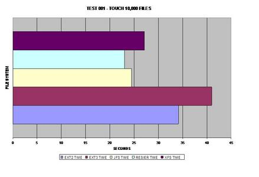
In the first test, ReiserFS takes the lead, possibly due to its
balanced B-Trees. (If the images are hard to read on your screen, here's
a tarball containing
larger versions of them.)
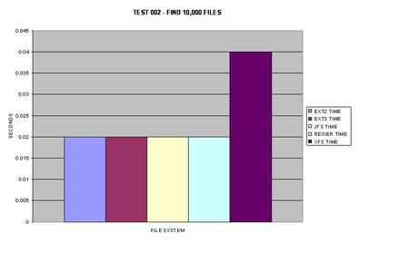
All of the files systems faired fairly well when finding 10,000
files in a single directory, the only exception being XFS which took twice as
long.
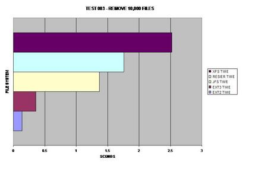
Both ext versions 2 and 3 seem to reap the benefits of removing
large numbers of files faster than any other file system tested.
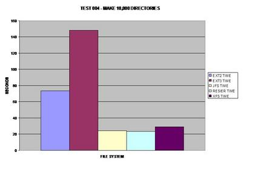
To make sure this graph was accurate; I re-benchmarked the ext2
file system again and got nearly the same results. I was surprised to find how
much of a performance hit both ext2 and ext3 take during this test.
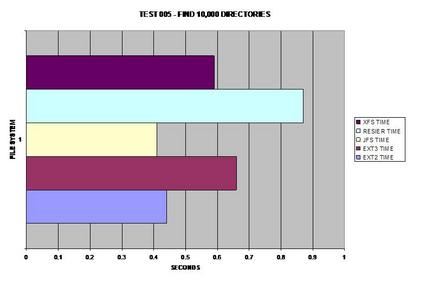
Finding 10,000 files seemed to be the same except for XFS;
however directories are definitely handled differently between the tested file
systems. Oddly enough, ReiserFS takes the largest performance hit in this
area.
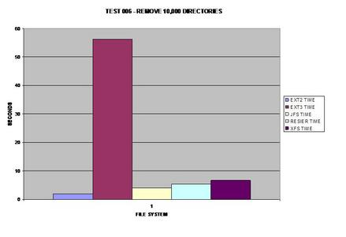
All of the file systems performed well in this area with the
exception of ext3. I am not sure what could cause such an overhead for ext3
over all of the other file systems tested.
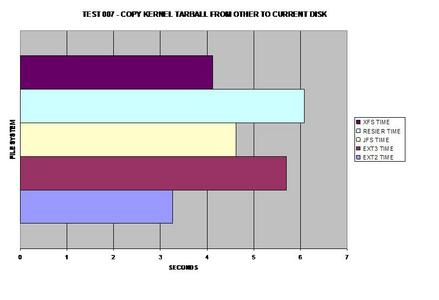
As expected, ext2 wins here because it does not journal any of
the copied data. As many would suspect, XFS handles large files well and takes
the lead for journaling file systems in this test.
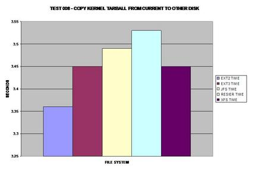
This benchmark represents how fast the tar ball can be read
from each file system. Surprisingly, ext3 matches the speed of XFS.
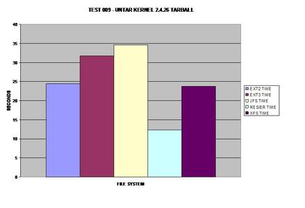
Surprisingly, ReiserFS wins, even over the non-journaling
filesystem ext2.
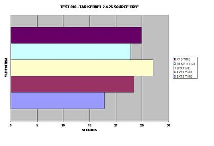
The best journaling file system here is ReiserFS; however, ext3
comes in at a close second.
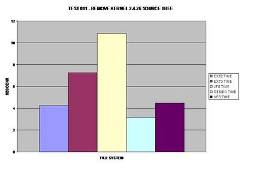
ReiserFS once again surprises everyone and takes the lead; it
appears JFS has some serious issues removing large numbers of files and
directories.
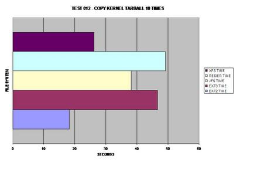
Obviously ext2 wins here as it does not need to journal its
copies but XFS is a close second, able to handle large files fairly well.
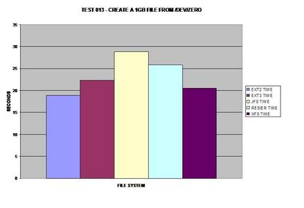
If one must deal with consistently large files, XFS seems to be
the best choice for a journaling file system.
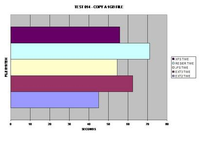
Once again on the journaling side, XFS performs well with large
files; however, JFS wins by a hair.
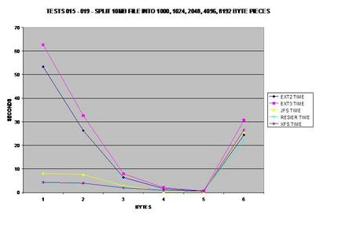
This test probably surprised me the most, so much so I re-ran
the test several times and got consistent results each time. Both ext2 and
ext3 have serious problems splitting files into small pieces, while JFS,
ReiserFS and XFS do not seem to have a problem.
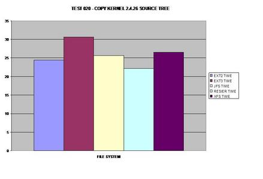
I figured people would ask for this test if I did not do it, so
here it is. It appears that ReiserFS's balanced B-Tree's allow it to
outperform all tested file systems including ext2!
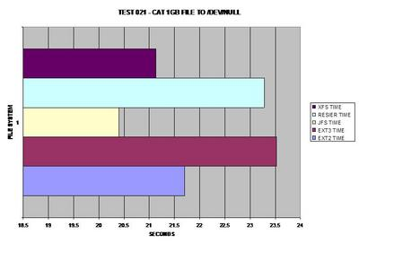
JFS takes this test benchmark by storm; I was surprised that it
had performed so well. However, once again dealing with large files, XFS is a
close second.
BENCHMARK SET 2 OF 4
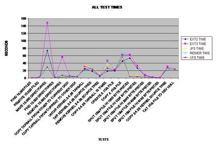
Here is a line chart of representing all of the timed tests.
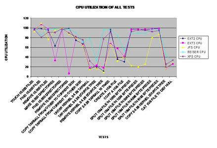
Here is a line chart representing the CPU utilized during each
test.
BENCHMARK SET 3 OF 4
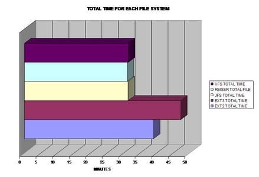
A bar graph for all the timed tests.
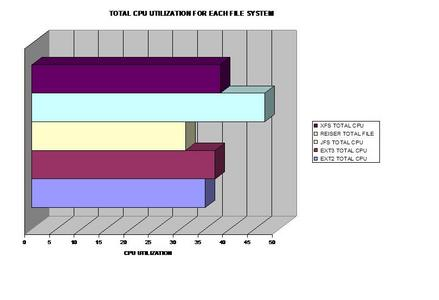
A bar graph of combined CPU usage.
BENCHMARK SET 4 OF 4
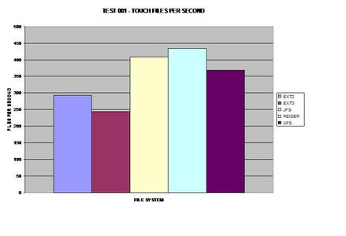
This graph was calculated by the previous tests.
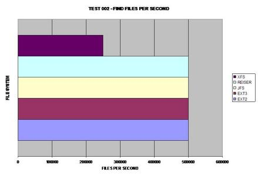
This graph was calculated by the previous tests.
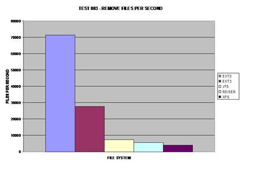
This graph was calculated by the previous tests.
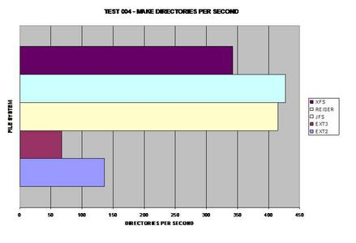
This graph was calculated by the previous tests.
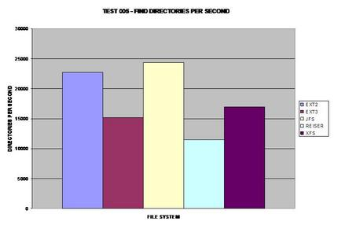
This graph was calculated by the previous tests.
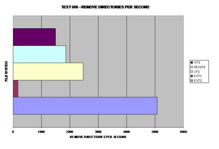
This graph was calculated by the previous tests.
This graph was calculated by the previous tests.
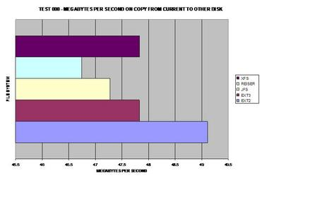
This graph was calculated by the previous tests.
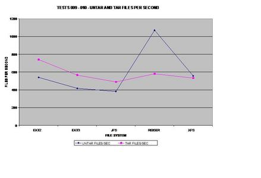
This graph was calculated by the previous tests.
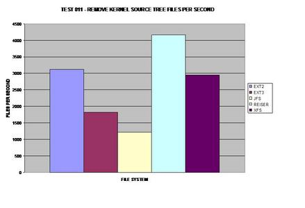
This graph was calculated by the previous tests.
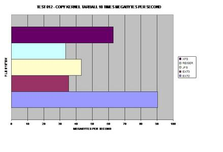
This graph was calculated by the previous tests.
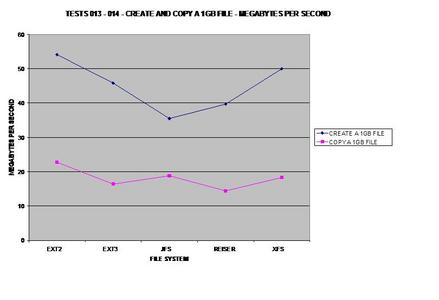
This graph was calculated by the previous tests.
This graph was calculated by the previous tests.
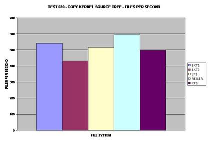
This graph was calculated by the previous tests.
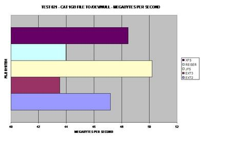
This graph was calculated by the previous tests.
CONCLUSION
For those of you still reading, congrats! The conclusion is obvious by the
"Total Time For All Benchmarks Test." The best journaling file system to
choose based upon these results would be: JFS, ReiserFS or XFS depending on
your needs and what types of files you are dealing with. I was quite surprised
how slow ext3 was overall, as many distributions use this file system as their
default file system. Overall, one should choose the best file system based
upon the properties of the files they are dealing with for the best performance
possible!
Cache memory is an integral part of every
modern microprocessor system. The way
your program accesses memory does have an
impact on run time, especially if you are accessing
data sets which are bigger than what can be
stored in the cache. In this article, I outline
an experiment which I did on my Athlon XP system
running Linux to get a `feel' of some of the performance
issues associated with the cache. I wrote a simple device driver
to read the Athlon performance monitoring
counters. The driver monitors user-space data-cache accesses made by
programs which reference a one dimensional array
in different ways. The results give quantitative evidence
of the importance of `locality of reference'.
Why have a cache?
Instructions (as well as data) are stored in RAM. Memory access is
much slower than the CPU speed. It's possible to have
faster memory - but then you can't have too much of it,
as cost would be higher. The solution is (as is the case
with almost all engineering solutions) a `compromise'. We
keep a small amount of high speed `cache' memory - and a much larger
amount of `main' memory.
In a direct mapped cache, each location in RAM is mapped to one
and only one location in the cache.
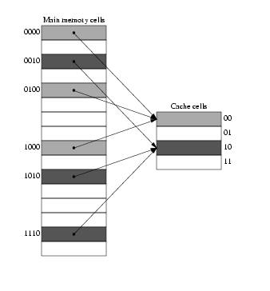
The figure shows 16 RAM cells mapped to 4 cells of cache memory.
The mapping is done as per the equation:
Address of cache cell = (Address of RAM cell) modulus (total number of cache cells)
We note that RAM locations 0, 4, 8, 12 are all mapped to location 0 in
cache. When the CPU first fetches data from memory location 0, a copy of
it is stored in the cache. If the same memory location is to be read
again, the read will be satisfied from the cache. But the question is,
how does the CPU know that the data in cache cell 0 corresponds to
data in RAM cell 0 - it can as well correspond to data in RAM cells 4, 8 or
12. The solution is simple - together with the data, each cache cell also
maintains a tag which uniquely identifies the corresponding location in main
memory. In the above example, we note that main memory can be addressed using
4 bits and cache, using two bits. If we examine the main memory addresses
0, 4, 8 and 12 (0000, 0100, 1000, 1100 in binary) we see that the lower two
bits of all the addresses are 00 - all these addresses are mapped to cache
location 00. We use as `tag', the higher two bits of the main memory address.
Thus, if cache cell 0 contains data corresponding to main memory location 4,
its tag bits would contain 01.
What is temporal and spatial locality of reference?
The cache is effective because it exploits `temporal and spatial locality
of reference'. Data which was accessed a moment back might be
accessed again and again (temporal locality); a typical example is
instructions in a loop. The instructions are stored in memory - and the
same instructions are executed over and over. When we step through an
array, we normally do it in sequence - when we read one byte of the
array, there is a high probability that the subsequent reads are going
to be from adjacent locations. Designers of cache systems exploit this
`spatial' locality of reference by loading not just the word being fetched
from memory, but also a few consecutive words into cache. The next few
accesses would be satisfied from the cache (a `cache hit') - provided they
access consecutive locations.
How much cache memory does your system have?
It's easy to find this out. Here is a part of the output generated
by running `dmesg' on my system:
CPU: L1 I Cache: 64K (64 bytes/line), D cache 64K (64 bytes/line)
CPU: L2 Cache: 256K (64 bytes/line)
How do you write a program which reveals the presence of
the cache?
Let's write a program which creates a really big array
and simply reads all the elements in it in sequence.
The array-reading part of the program takes about one second to complete
on my Athlon XP system with a clock speed of 1463 MHz; the system has
256Mb of RAM and the program does not swap to disk.
Now we change the program a bit. Suppose we have a cache block of size
M bytes. We think of main memory as being divided into blocks of size
M bytes each. Reading the zero'th byte would result in bytes 0 to M-1
getting stored in a cache block. If the next M-1 accesses refer to locations
1 to M-1, then the references would be satisfied from the cache. But what
if the next referenced element is the one at main memory address M? Because
only elements 0 to M-1 are in the cache, we have a miss, and another M byte
block gets loaded into the cache (the block from M to 2*M-1). If we keep
on accessing this way (ie, 0, M, 2*M, 3*M etc), each access will result in a
cache miss. If the array is fairly large compared to the cache size, we
would very soon fill up the cache. Now, if we come back and try to read from
locations 1, M+1, 2*M+1, 3*M+1 etc, these elements would no longer be in the
cache as they have been replaced by elements present at the far right end of
the array - and so we again have cache misses. The figure below shows this kind
of access for M=4.
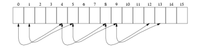
This makes up
for very inefficient use of the cache - our program does not show enough
`spatial locality of reference'. It would show up in the run time of the
modified program - I measured it to be around 9 seconds on my system.
CPU's from Pentium onwards have special performance counting registers
which can be used for counting architectural events like a cache hit/miss,
TLB accesses etc. These registers can be accessed from kernel mode using
the macro's `rdmsr' and `wrmsr'. The Athlon XP CPU has four such 64 bit
counters located at 0xC0010004 to 0xC0010007. Each of these registers can
monitor one architectural event at a time. The events to be monitored, whether
monitoring is to be done for user mode events or kernel mode events etc are
controlled by four `event select registers' located from 0xC0010000 to 0xC0010003
- there is one event select register for each event count register.
Let's say we wish to count the DCACHE misses. We will use the first
performance counter at 0xC0010004, which is controlled by the event
select register 0xC0010000. We have to write a 32 bit number to the
event select register. Here is how the number is formed:
Least significant 8 bits (D0 to D7) should be the `event number'.
A DCACHE MISS is event number 0x41.
If bit 16 is set, user mode events are counted. If bit 17 is
set, kernel mode events are counted.
After this, executing `rdmsr' on 0xC0010004 would yield the
number of cache misses.
unsigned int low, high;
rdmsr(0xC0010004, low, high);
[Listing 3] implements a simple character
driver for reading/writing the performance count registers. A few
macro definitions for use with this module are provided in
[Listing 4].
Taking measurements
[Listing 5] is a simple program
which reads DCACHE misses before and after calling two functions,
one which which accesses an array in the normal manner - and
another which reads the array by jumping across blocks. Only
user space cache misses are counted. It should be noted that
other programs running on the system also contribute to the
count. Here is one set of outputs:
low = e023d3ef, high = ffff
low = e047a944, high = ffff
-----------------------
low = e938fae5, high = ffff
Further Reading
The book Computer Architecture - a Quantitative Approach by Patterson
and Hennessy is the definitive reference for all the clever tricks which
designers employ to push the limits of computing performance.
The AMD Athlon Code Optimization Guide details the use of
the performance counting registers and is available
here. Similar documents are available for Intel CPUs also.
I am an instructor working for IC Software in Kerala, India. I would have loved
becoming an organic chemist, but I do the second best thing possible, which is
play with Linux and teach programming!
Capturing screenshots has been an invaluable
tool for users of graphical environments for a long time. Utilities like
import, the Gimp's acquire screenshot, and those included with
one's preferred window manager or desktop environment enable
users to share screenshots of their desktop
and enhance tutorials by not just
writing about how to do something, but also providing images for
reference.
But how about taking this to the next level, and instead of merely
providing a static image, play a nice video clip which clearly demonstrates
the steps being explained? Such a screen recording would be an invaluable
complement to tutorials and demonstrations, and have many other practical
purposes.
Unfortunately, a quick search on Google reveals that the choice of screen
recording applications on Linux is pretty sparse.
While other Operating Systems have a wide
array of commercial and shareware applications available for
screen recording, Linux seems to come up short.
But two applications rise to the surface as outstanding
utilities to fit this niche: vncrec and vnc2swf. What makes these
utilities even more useful is that they take advantage of
Virtual Networking Computing, commonly called VNC. VNC was developed by Olivetti Research
Laboratory (ORL) and has been a staple tool for system administrators
everywhere. VNC's greatest benefit is its cross-platform capability.
VNC makes use of thin-client technology to create a session
between a VNC server and VNC
client via an IP connection. This session allows the VNC client to either
take control of the VNC server, watch what is happening on
the VNC server, or engage in a group view where any
number of VNC clients connect to a VNC server.
Both the VNC server and client run on most modern operating systems.
You can run the server on a Windows workstation and connect with the client running
on Linux. Or, you can run the client on NetBSD and the server on Mac OSX.
This article assumes you know the basics of running both the vncviewer and vncserver. For
complete documentation on VNC consult the Real VNC
website and documentation files included with VNC.
With vncrec and vnc2swf the capabilities of VNC are taken to
another level by allowing the recording of VNC sessions for
future use. This is one of the rare screen recording applications
that is not limited to capturing a single platform, as you
can easily record Windows, Linux, OS X, and Solaris sessions. Currently, though,
vncrec and vnc2swf only run on Linux, OS X, the BSD's, and other Unix based OS's.
vncrec
Installation and Basics
Vncrec was developed by Yoshiki Hayashi and released under the
GNU GPL. The source code is available at www.sodan.org/~penny/vncrec.
The current version is 0.2 and very stable. The
only requirement to compile vncrec is Xvnc which is included in
the download of VNC from Real VNC.
After fulfilling the requirement and unpacking the sources, vncrec
is built issuing these commands in the vncrec-0.2 directory:
xmkmf
make World
After a successful compile vncrec will be ready for use in that
directory, or you can run make install as root to install
vncrec.
Vncrec is used to both record and play back a vncrec session.
If you are familiar with vncviewer's (the VNC client
program) options you will notice that vncrec adds three more parameters for
recording and playback of vncrec sessions:
-record filename
-play filename
-movie filename
Record does just that, it will record the VNC session and name it
whatever filename provided. Once you start a vncrec recording
session you can end the session in one of three ways: 1) Pressing
F8 and selecting exit, 2) Closing the vncviewer window, or 3) ctrl-c
in the terminal where vncrec was executed.
The play option will play back a recorded VNC session.
Playback of a recorded VNC session is optimal if the playback is
done on the same machine that performed the recording. Many times
playback on other machines fails to produce a viewable
session. There tends to be extreme distortion, or just a black
screen.
Vncrec's third option: -movie will extract each frame of the
recorded session out to an .xpm file. Before you call this option it
is recommended that you do so in a separate directory dedicated for
these frame exports only.
To start recording a VNC session simply enter the following
command:
vncrec -record filename servername
For example:
vncrec -record session1.vnc 192.168.0.130
You will be prompted for the VNC server's password. After authentication
you will connect to the VNC server much like
you would with vncviewer. When you are ready to terminate your
session press F8 which will produce the following menu:
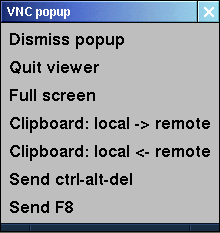
Choose quit to exit the session and stop the
recording.
Now that you have captured your first session, enjoy the
playback:
vncrec -play session.vnc
Your recorded session will now be played through vncrec.
If you watch the session all the way through it will
close upon completion. To terminate the session before completion
press ctrl-c in the terminal
you issued vncrec from (the F8 menu is not accessible during playback).
In addition, the homepage for vncrec and the README
included with the sources provides some other examples on how to
use vncrec. As always,
vncrec -help will produce the basic usage and outline
the accepted options.
There are a handful of different options you can pass to vncrec
just like you can pass to the regular vncviewer, such as
depth, geometry, shared, and fullscreen. These options generally do
not produce the desired results when issued with vncrec. For
instance, you can try to specify a different geometry for vncrec to
use but it will drop back (or up) to the screen size run by the
server. The same will occur with depth. If you pass the fullscreen
option you will still get a screen size and a recording screen size
that equals the geometry of the server screen. If the geometry of
the server is smaller than that of the workstation you are running
the recording session from, the vncrec session will be centered on
the screen with the excess screen real estate forming a black
border around the session (which will not be recorded). Playback
using the fullscreen option will produce the expected results: Full
screen with a border should the recording geometry be smaller than
that your workstation's geometry.
There are some options that do make a difference. One of those
is the truecolour option. Particularly when connecting to other
operating systems that are using a "truecolour" screen depth
(usually 24 or 32 bit color depth), specifying truecolour can help
reduce any anomalies in the session. This is particularly pertinent
when recording sessions connected to Windows
workstations.
Both the vncviewer and vncrec support the viewonly options
where the client connects to the VNC server but only for viewing
purposes. There is no keyboard or mouse control passed between
the server and the client. The viewonly options would be practical
to record a session where a third party is conducting a demonstration.
Vncrec cannot export the session to a video format like mpeg or avi.
Transcode
provides the necessary codecs for converting a vncrec session into
any other video codec supported by Transcode.
Vncrec does not record audio as VNC
does not support audio transfer. Users can work around this limitation
by employing Transcode to stream an audio track, created separately, into the
final video.
Exporting vncrec Files
This section will cover how to convert a vncrec session
to a video codec supported by transcode or mencoder. We will also
cover the -movie option of vncrec. To follow along with the
examples you will need a current version of Transcode
(version 0.6.12 is the current stable as of this writing but any
version from 0.6.9 should work),Mplayer
(version 1.0pre3 is the latest), and a recent version of
ImageMagick (version
5.5.7 was installed on the testing workstation).
The greatest advantage of exporting the vncrec session to a
video codec is portability. This allows your recorded session
to be usable outside of the vncrec application and on
other workstations that run a video player supporting the codec
used to encode the vncrec session. Transcoding a vncrec
session into a cross-platform viewable video
file requires that you have compiled transcode or installed a
binary package of transcode compiled with the necessary codecs
acceptable for use by the other operating system. Inquisitive
readers are directed
to the Transcode website for more information.
There is a wonderful example of using transcode to encode a vncrec
session into an avi file that was created by Tilmann Bitterberg and is
available from the vncrec website.
This section will expand on that video and hopefully add some useful
information.
The basic syntax for transcoding a vncrec session into an avi file is:
The -i switch designates the input file and -g declares the video stream frame size, which
in this case is 800x600. Inclusion of the -g switch may be required depending on the
version of transcode you are using and how it was compiled. Not declaring the
video stream frame size may produce an error message like this:
The -y switch declares the video export module, in this case xvid. The output file,
designated by -o, is session.avi. The -k and -z switches are optional, but may be necessary
for proper output. The -z switch will "flip video frame upside down," so if you
your output video looks like a mirror image of what you are expecting, you need to pass
this switch. -k will swap the red/blue in the video frame to produce more accurate
colors.
Transcode has more extensive features and will even allow you to include an
audio channel in the final output. Thus, one could include audio commentary or instruction
to the video. Curious readers
are encouraged to visit the
transcode site and documentation for more information.
If for some reason the playback of your transcoded session is not optimal, there
may be some artifacts or distortions along the bottom and left edges of the
video. You may want to try resizing the video during the transcode process.
Standard video sizes follow an aspect ratio divisible by 32, 16, 8, 4, or 2. Typical
sizes include 800x600, 640x480, 720x480, 480x260, 320x172, and 240x128.
Resize the vcnrec session with transcode can be
accomplished using the -Z switch:
In this example the original 800x600 session is reduced to an avi file that is
720x480. There is more to the -Z switch, like the capability of augmenting
the type of filtering. Furthermore, there are other resizing switches one
may want to employ. These switches are explained in the transcode man page.
Remember that the resize value should be a factor of 32, 16, 8, 4, or 2. Some of
the resize switches used by transcode require a strict ratio be applied. Consult
the
Transcode website for in depth coverage and examples.
Finally, keep in mind that clarity of the video decreases proportionally with size.
Transcoding an 800x600 vncrec session to a 240x128 sized .AVI file will produce
a video that is next to impossible to watch, especially if there is text to be read.
Creating cross-platform compatible videos using transcode can be difficult. In fact,
the author and his colleagues had a problem doing this. You must use a codec that
is available on the target system[s]. If your video is made available as a
download to the public, it may be difficult to guarantee that the recipient[s] will
have the necessary codecs installed.
Another quirk found with transcode is a tendency for
the transcoding process to bail out before completing. One particular problem is when
the vncrec session involved browsing the Internet. When the browser window
changes in the vncrec session transcode exits without an error. (This was tested
on multiple machines with consistent results.) A possible reason is that the
workstations did not have enough memory and processor speed to handle
what was required by transcode. Transcoding a vncrec session of a browser using a 2ghz machine
produced the desired results. Interestingly, the sample video created by a
transcoded vncrec session showed the creator using a web browser, albeit Netscape 2.1.
Successful conversion of a vncrec session does not depend on transcode alone. If your
vncrec session suffers from the drop out problem described above, you may
want to give mencode a shot.
Vncrec has an option to dump out each frame from of the vncrec session to a .xpm file. By using the
-movie switch each frame will be dumped out in sequential order give an appropriate file name to
maintain that order:
vncrec -movie session.vnc
Before executing this command it is recommended you start in an empty directory, or
alternately a directory created for the purpose of holding these files, as this
command will most likely generate up to a few thousand files.
Once you have the vncrec session exported to individual frames you will
convert these frames to a format mencoder can handle. (For the purposes of this article
jpeg will be the format used.) This is easily accomplished using mogrify (part
of the ImageMagick suite):
mogrify -format jpg *.xpm
Mogrify will convert each .xpm file to a .jpg file. This can take some time
depending on the number of files and the hardware
specifics of your workstation.
Once the conversion process is finished, use mencoder to
sequentially encode them into the video format of choice:
The "-mf on:fps=8" tells mencoder to turn on the multiple files option and encode
at 8 frames per second all the jpg files in the same directory. The output file, -o,
will be session.mpg. Mencoder will use the lavc (libavc codec) as the output video
codec (-ovc) and pass the lavc option (-lavcopts) to create a mpeg1 video. Once the conversion
process is finished, the resulting video should be playable on any media player capable
of playing mpeg1 video. Furthermore, the file size should be very small.
In summary, the vncrec utility makes it a snap to capture vnc sessions on any platform
the server is running on. File sizes of the sessions tend to be small. There is a tendency
for the recorded session to only playback on the machine it was recorded from. Although
there is no native export to standard video codecs, vncrec sessions
can be encoded to a video using transcode. Additionally, individual frames can
be exported from the session and later pulled together using mencoder.
vnc2swf
The second screen recording utility examined can be considered a cousin to
vncrec: Vnc2swf. Vnc2swf exports the screen recording to Flash format for playback,
either embedded in a web page using a browser with the Macromedia Flash plug-in, or a
standalone Flash player.
Installation and Basics
Vnc2swf, distributed under the GNU GPL, can be downloaded from http://www.unixuser.org/~euske/vnc2swf
and requires that you have the Ming library installed.
The Ming library allows applications to export to the Flash format. As of this writing
the latest version of ming-0.3alpha2 will not work with the current version vnc2swf (version 0.3),
Ming version 0.2a had no problems. I strongly recommend starting with Ming 0.2a.
After extracting the Ming library, you may want to edit the Makefile and change some
parameters (like installation destination). To compile simply:
make
make install (root access required)
There are more installation scenarios for Ming such as integrating with PHP and Python.
Review the README file for more information. The above provides the basic installation
necessary for vnc2swf.
Compiling vnc2swf takes three steps:
./configure
make
make install (root access required)
Like vncrec, vnc2swf has similar command parameters to vncviewer, with some added
options for recording the session. Unlike vncrec you do not have to start
recording the vnc session right away; you can start the recording via the F8 menu. This
also means you can stop a recording without closing the session and even pause, then
resume the recording later on--two features not available in vncrec. Another interesting
feature is the ability to record a sound file in conjunction with the session. Right
now the mp3 format is supported and must be generated beforehand. You can
pipe in live miked audio, but this requires patching the Ming Libraries. The
patch and directions are provided with the vnc2swf sources. See the README
file for more information
Execution of vnc2swf is as simple as vncrec. For example:
This starts recording (-startrecording) a vnc session to the server running on
localhost:1 using the truecolour parameter and outputting to sample.swf. If we did not
specify the startrecording parameter, then we would need to start the
recording via the F8 menu, which is a bit different than that for vncrec:
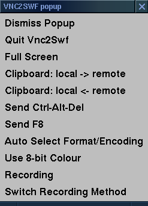
The additional options are "Recording" (F9 is the hot key to toggle) which will allow you to start and stop the recording.
When vnc2swf is recording this option will be highlighted. In the image above, the session is
not recording. You can switch from the current color settings to 8bit color and
back to original by toggling the "8 bit" option. "Switch Recording Method"
toggles between recording every image update immediately (default) to record only one
image per update frame. The latter will reduce the size of the generated Flash file. You can
toggle the recording method using the F10 key.
Vnc2swf will allow you to loop in a pre-recorded mp3 file using the -soundfile option:
Notice that the -startrecording option was not used in this example. This means that
recording would have to be started in the vnc2swf session either by the F8 menu or pressing
F9. The mp3 file is looped into the Flash output only when the vnc2swf session is
recording. Thus, the mp3 will start recording into the flash when recording starts on
the vnc2swf session. Furthermore, if you pause the recording, the mp3 recording will also
pause. Upon resuming the recording, the mp3 will continue from the point it was left off.
Tips for Creating a Tutorial Session With an Audio Track
Adding an audio track to a tutorial session can be a bit tricky. Getting the audio to sync
with the video is key for proper effect. The best option is to follow the directions in the vnc2swf
README file to patch the Ming library and allow live miked audio to be recorded by vnc2swf through a
pipe. But there are other methods to accomplish this task.
First and foremost, you should carefully plan your tutorial. You may want to create
some story boards and even script a dialog. Adequate preparation is essential
for a polished product.
Once your script is complete you will record an audio session. Most Linux distributions
have some recording software installed. Sox is a command line utility that will record
audio in from your sound card to a .WAV file. Both Gnome and KDE have recording applications.
There are also a number of graphical programs like
Audacity and ReZound that are excellent choices.
Use any one of these to create a .WAV file of your script. Be careful not to rush through your
script. Leave pauses long enough to account for your actions and how long they may take to
execute in the session. It is also recommended to create a seperate
count-down .WAV file (a recording counting down from 5 is adequate).
After creating a .WAV of your script use an encoder like Lame to convert the .WAV to an
.MP3 file for use by vnc2swf.
The difficulty is in making sure the audio is synced with the video. Since vnc2swf
will not play the audio while recording the session, you will need to play the audio
through another program while recording. I.e.; the recommendation for two files.
Furthermore, creating the count down audio will provide enough time to start the recording. You
may want to reherse the process before recording using vncviewer instead of vnc2swf
with the next few steps.
Open up two xterm sessions: One to run the vnc2swf session and the other to play the
scripted audio so you can follow along. In the first xterm start your vnc2swf session without
the -startrecording option and make sure you specify the audio file with the -soundfile
option:
vnc2swf -audiofile audio.mp3 session.swf :1
In the second xterm set up to play the count down and .WAV version of the audio file. You may
also want to add a few extra buffer seconds to give you time to switch back to your vnc2swf session
by using the sleep command:
sleep 5; play countdown.wav audio.wav
At the end of the count down press the F9 key to start the recording and follow the
directions of your audio script. Upon completion press the F9 key to stop
the recording and then exit vnc2swf. Play the Flash session back in a web
browser or through gflashplayer.
If you stop recording the vnc2swf session, but do not exit, this will pause the audio
recording. Resuming the recording will continue to record the audio into the session from
where it was left off. Should your tutorial contain needless filler like internet downloads or
program compiles, you can break the audio file you are following up into parts and repeat
the above steps toggling the F9 key to pause each part until the filler completes.
Getting the audio and video to sync can be a tricky process. You may need to repeate
the vnc2swf recording process above a few times until you get the hang of it.
Embedding Vnc2swf Sessions in a Web Page
Once your Flash recording has been created you should embed the Flash
in some HTML code, specifying the height and width value of the Flash file. Failure to do
so will result in distorted playback. Here is sample code:
This code should work without a problem on Mozilla-based browsers. For Internet
Explorer you will need to make use of the <object> tag. Notice that the
width and height values of the Flash file are specified. Also, the loop="false" will prevent
your Flash from looping continuously. You can also specify a numeric value to have the
Flash loop "x" number of times. For more information on embedding a Flash file in a
web page check out Macromedia's
Technote on Object and Embed Tag Syntax.
The vnc2swf session can be played in a standalone Flash player (i.e.;
gflashplayer). Playback will suffer the same distortions as when played
in a web browser without embedding the Flash in HTML and specifying the height
and width, unless you specify playing at 100%. The 100% option is available under the View
menu.
Hopefully this overview of VNC recording utilities has sparked some interest
in playing with these tools and putting them to practical application. This article has
only scratched the surface, the rest is up to your exploration. For instance, you can record
real-time audio with vnc2swf, but this requires patching Ming (hint: see the
vnc2swf README file). You can also add audio to transcoded vncrec sessions for which one
is directed to the transcode documentation. As always, have fun.
Postscript
O'Reilly has an excellent article in their Linux DevCenter site on creating
a bash script that uses applications standard in most Linux distributions to
create screen recordings. For more information read the article: Making Screen-Capture
Movies by Robert Bernier.
Dann is die-hard Slackware enthusiast who lives in Bethlehem, Pennsylvania,
USA. About 6 years ago he decided it was time for a career change and left the
field of Psychology for Computers and Network administration. Taking a job on
the "bench" at a local office supply chain for ground level experience, he
stumbled upon a boxed copy of Red Hat Linux 6.0. After that there was no
turning back. a few months later Dann co-founded the Lehigh Valley Linux Users Group
which is still running strong today. In addition to the LVLUG, Dann operates
his own domain thelinuxlink.net which
strives to be a portal to Linux and Open Source happenings in and around the
Lehigh Valley, PA, USA. He is one of three hosts for the weekly Linux Link Tech Show, a streamed
web radio show. Dann is currently employed as an Applications Specialist for a
local school district. His wife and two daughtes do their best to tolerate his
technology addiction.
The Ecol comic strip is written for escomposlinux.org (ECOL), the web site that
supports es.comp.os.linux, the Spanish USENET newsgroup for Linux. The
strips are drawn in Spanish and then translated to English by the author.
These images are scaled down to minimize horizontal scrolling.
To see a panel in all its clarity, click on it.
These cartoons are copyright Javier Malonda. They may be copied,
linked or distributed by any means. However, you may not distribute
modifications. If you link to a cartoon, please notify Javier, who would appreciate
hearing from you.
All Qubism cartoons are
here
at the CORE web site.
Jon is the creator of the Qubism cartoon strip and current
Editor-in-Chief of the
CORE News Site.
Somewhere along the early stages of
his life he picked up a pencil and started drawing on the wallpaper. Now
his cartoons appear 5 days a week on-line, go figure. He confesses to
owning a Mac but swears it is for "personal use".
It's been six months since
I've been able to do a Back Page. It hasn't been for lack of material -- I've
got 3 megs worth of the funniest messages from The Answer Gang and the Gazette
mailbox accumulated. It's just finding time to select and format them. I
wanted to leave you a good Back Page for my last issue, so I took a weekend and
went through them. It came out to four articles' worth. There's two Wacko
Topics of the Month ("The Shift Key FAQ", "Domestic vs Wild OSes"), the usual
Not The Answer Gang (now called "The Linux Laundrette"), two long Laundrette
threads I've put in separate articles (one about American vs British English,
the other about buoys -- or at least it started as a thread about buoys but
then it meandered to the Netherlands' history and then again to music), some
Non-Linux Links, and a World of Spam. And there's still 52 KB after that for a
future issue! I've put all four articles in this issue, one right after the
other. Enjoy!
By Alan Meiss, ameiss from indiana.edu
Version 0.001
Unleash the Power of Shift!
Q. My shift keys have little arrows on them. Does that mean the
*real* shift keys are located above them, and these keys are just little signs
to point them out?
A. Nope, they're the Real McCoy. The little arrows mean "up", as
in "look up at the screen". Your keyboard is telling you to learn to
touch type and quit staring at your fingers.
Q. What happens if I press both shift keys?
A. Even bigger letters may show up on your screen. You should not use
this feature, however, because these letters are also brighter, and may
cause Screen Burn-In, which would be particularly embarrassing if you
were typing something naughty at the time. You might consider obtaining
the author's Shift Key Burn-In Protector program for only $139.95. Or
you might not, it's your computer, but don't say I didn't warn you.
Q. my religion prohibits the use of shift keys. how can i type
capital letters and punctuation.
A. Discuss alternatives to the shift key with your spiritual advisor.
Perhaps your deity would not be angered by repeated use of the Caps Lock
key, or maybe you can retain a consultant to depress the shift for you.
You might also consider replacing punctuation marks that require the
use of shift keys with lower case expressions; replace ? with "huh"
and ! with "zowie".
Q. I PRESSED SHIFT AND IT"S STUCK DOWN NOW>
A. Do small children with a fondness for peanut butter use your keyboard
frequently? If so, you may want to clean it off for more reliable
operation. First, disconnect your keyboard by gripping each of its ends
firmly and pulling as hard as you can. Next, immerse the keyboard in
warm water and scrub thoroughly with your favorite lemon-scented detergent
and lots of steel wool. Finally, you need to dry the keyboard. Either
dry it to touch with a handheld blowdryer, or place it it the dryer
for not less than 60 minutes. Be sure to clean the lint screen when you
are finished.
Q. Why are there are no "shift" keys on my keyboard, but there are
two keys labelled "hif"?
A. Again, you may want to consider cleaning your keyboard, and washing
your hands more frequently for that matter.
Q. Are there shift keys on my Macintosh?
A. Yes, although instead of the notation "shift", the key may be labelled
with an excited Mac face, something like :O . Press this key to use
shift, and be thankful you're using a friendly Mac instead of a mean old
PC with all them confusin' words 'n stuff on it.
Q. I'm sick of pushing the shift key every single time I want big
letters. Is there any other way to do this?
A. This is the Modern Age of Convenience, and you may be able to activate
the shift key merely with the power of your voice! Check to see whether
your computer is equippped with speech-recognition equipment by saying
the word "shift" very clearly and slowly into its speaker. Then watch the
keyboard closely to see if the Shift key moves down. Note that you may
have to repeat this action several times to "train" the computer to
recognize your voice before the feature works reliably.
Q. There are two shift keys, which should I use?
A. Avoid unnecessary wear on either shift key by alternating between the
two. Keep track of your usage of each key so that you press them in
equal amounts. Your keyboard may be equipped with a small notepad; you
should use this to make little tally marks in two columns for each time
you shift. Remember, it's better to go to a little trouble than wind up
with a broken shift key.
Q. Why are the shift keys bigger than the other keys?
A. They aren't. This is simply an optical illusion. Just as the moon
appears much larger when it is close to the horizon, your shift keys
look larger because of their proximity to other keys. To verify this,
go out in a large field at night with your keyboard, place it in an
upright position, and view it from a distance of 200 yards. Sure enough,
the keys all look the same size!
Q. If I press the shift key at the wrong time, or too many times,
will my computer explode?
A. No. Well, generally no. Not unless you are using a NEC laptop. Or
vt100 terminal emulation. But even then, hardly ever. Really, don't
worry about it. Forget I mentioned it. Just type softly. Move along,
next question.
Q. No matter what I do, the shift key just doesn't seem to work.
What's wrong?
A. Have you ever considered that the problem may not be your keyboard,
the problem may be YOU? Perhaps God Himself has suspended the operation
of these keys to send you a Message that you have strayed from the path
of righteousness. Use this as an opportunity to reflect on your life.
Before rushing blindly ahead with a lot of shifting, consult the spiritual
advisor of your choice for help in dealing with any unresolved issues
in your relationship with the Almighty.
Domestic vs Wild OSes
[Thomas]
I received this from my LUG. "So which OSes are wild and which are domestic?
'Jim' replied...
Ok, let's see now:
MacOSX: Sort of like a pedigree persian cat.
Very sleek, very sexy, but a little too prone to
going cross-eyed, biting you on your thumb and
then throwing up on your trousers.
Windows XP: Big cow. Stands there, not
especially malevolent but constantly crapping on
your carpet. Eventually you have to open a
window to let the crap out or you die.
Windows 2000: Smaller cow. Just as much crap.
THEOS: Mad cow. Utterly fucking insane cow, in
fact. A cow so mad it thinks it's a teapot. The
swamp dragon of the OS world.
Linux: Horse. Like a wild horse, fun to ride.
Also prone to throwing you and stamping you into
the ground because it doesn't like your socks.
TRSDOS: Friendly old lizard. Or, at least,
content to sit there eating flies.
..and continued later...
(FREE|OPEN) BSD: Shire horse. Solid, reliable,
only occasionally prone to crushing you against
a wall and then only because you've told it to
without knowing.
Solaris: Shire horse that dreams of being a race
horse, blissfully unaware that its owners don't
quite know whether to put it out to grass, to
stud, or to the knackers yard.
Not the Answer Gang
--OR--
The Linux Laundrette
Redirection and noclobber
[Sluggo]
Stray files called "!" mean I did a command in bash using zsh (csh)
syntax. "COMMAND >! FILE" in zsh means "redirect to FILE and overwrite
it dammit!" But in bash it creates a file called "!".
The corresponding syntax in bash is "COMMAND >| FILE".
[Ben]
Oh, now I get what you mean. This is only useful if you've done "set -o
noclobber" or "set -C"; otherwise, "COMMAND > FILE" works fine.
[Sluggo]
Of course I have 'noclobber' set. Doesn't everybody? It's a standard
safety precaution. Or do you follow the "Real Men Don't Need No Stinkin
'noclobber'" theory? But considering Woomert and Frink use the -w switch
in Perl more than I do, I doubt it....
[Ben]
Redirection in shells is Wyrd and Arcane.
Ben's army days
[Ben]
When taking the Army entry tests WBW, I found out I don't do well with
red-on-green patterns. However, there was a "compensating" factor (that is,
compensating for the Army, not too good for me!) - I can see OD green (and
hence, all forest-pattern camouflage) against a green background as clearly as
if it was, say, a light gray against black.... Care to guess who was *always*
made point man in my infantry basic training and AIT??? Good thing it was only
training.
[Jimmy]
AIT? Damn, it stands for half a million things! I'll just assume it's
"Something Something Training"
[Ben]
One time I managed to prevent a buddy from tripping off a string of practice
grenades by yanking him back just in time. The tripwire was colored standard
Army OD green...
[Jimmy]
Hmm... practise or no, I think grenades are definitely something best
avoided, unless you're the one counting.
[Ben]
On the other hand, my platoon was _never_ successfully ambushed...
[Jimmy]
Mental note: never engage in jungle combat with Ben.
[Ben]
AIT stands for "Advanced Individual Training". Basic was the same
(theoretically, but not at all) for everybody; AIT was the training you got for
your MOS (Military Occupational Specialty.) I went in as a grunt (11B), got
retrained as a 52C (Turbine Engine/HVAC mechanic) when they found out they
couldn't send me overseas (I wasn't a citizen yet!), then got snagged by the
Military Intelligence (a non-sequitur) when they found out I could do Russian.
A lot of history in between all of that, including being a medic for a short
stretch....
[Jimmy]
I realise it's a faux pas to shoot a medic, but weren't you worried
about the similarity between a red cross and, say, a crosshair?
[Ben]
Nah. I was unkillable back then; we all were.
[Jimmy]
(If you're gonna reminisce, I'm gonna go right ahead and whip out the
Full Metal Jacket quotes.)
"This is my rifle, this is my gun. This is for fighting, this is for fun".
[Ben]
Congrats - you've won a beer, collectable when we happen to share a
geographical location!
[Jimmy]
There's always a catch, isn't there? Sure, I'll fly a few thousand miles
for a beer.
[Ben]
Hey, you never know what might happen! I might be over your way visiting
one day (it's a long-distance plan), or you just might end up here - and
there you are, a beer all ready for you. None of that Buttweiser or
Willer, either; Sam Adams at the very least. On the other hand, I'm a
fan of Young's Luxury Double Chocolate Stout, so you never know what
might happen...
[Jimmy]
That reminds me... Arthur Guinness is in the bar in heaven, and he bumps
into Eberhard Anheuser, Adolphus Busch and Carl Conrad. The four start
reminiscing about their lives as beer producers while they wait for the
waiter. Anheuser offers to pay for the round, and orders a Budweiser, as
do Busch and Conrad. Guinness orders a milk. After a while, there's a
lull in the conversation, and Anheuser turns to Guinness.
"Arthur, I hope you don't mind me asking, but when we ordered, we
ordered Budweiser, because that was our company. Why didn't you order a
Guinness?"
Arthur looks at each man in turn, and says "I would have, but if none of
you were going to have a beer, then neither was I".
Anchors aweigh!
It's blowing a full gale here in St. Augustine [Florida], and there are lots of
boats dragging (the soft mud bottom here makes for lousy holding.) Early
this morning, mine joined the drag race - I've fought her to a
standstill, but need to get my anchors up (this is, mildly put, not easy
in a gale - particularly by yourself) and get her moved to a safer
location. I'm taking a break for the moment - I've been helping other
folks get theirs under control - but I'll be pretty busy for a while.
[Jim Dennis]
When I expressed a hope that the wind would fill your sails, THAT'S NOT
WHAT I MEANT!
[Ben]
Careful what you wish for, Jim. At least for me.
[Thomas]
BBC Radio4 said that gales would be quite common, but they weren't sure
how severe :( Seems you've hit the brunt of it, alas.
[Ben]
It's still blowing 35 kt., gusting over 40; a full gale, and just a bit
short of a storm. The northeasterly wind has a nice long run ("fetch")
down the river, and has built up some good-sized seas; "Ulysses"' bow is
heaving through (estimated) a 5' range. The surf is literally exploding
against the town's seawall.
[Sluggo]
I've never seen a boat with a bicycle on it before.
[Thomas]
ROFL...
Either that, Mike, or it is one hell of an expensive pedallo to hire.
[Sluggo]
A what? Checking www.m-w.com to see if pedallo is as nasty as bordello
or fellatio, I see 'pedalo' (one 'l') is:
chiefly British : a small recreational paddleboat powered by pedals
[Thomas]
Yes, one 'l'...damn kbdrate. Must fix that. Hmm...certainly not
fellatio, Mike. Unless, that is a euphemism for which I was previously
unaware?
Indeed, they're yellow and one paddles them out to sea...hence the bicycle
reference. Sigh..... I doubt whether my humo[u]r will *ever* be
appreciated.
Acrophobia
On Fri, Jan 09, 2004 at 07:16:15PM -0500, Ben Okopnik wrote:
[Thomas]
I hate heights.
[Ben]
Perhaps you should consider taking an intro jump, then, or an intro
flying lesson. I got myself over the fear of heights by dangling my legs
from the edge of a 12-story high building I'd sneaked into when I was 8
or 9... and it seems to have stuck.
[Frodo]
Or he could do what I did: build bridges during summer break. It wasn't
so much being 40 - 80 feet off the ground that breaks you of the fear,
more like walking along a beam less than a foot wide. Not on the beam
per se, but rather on the half inch rebar (reinforcing bars of steel)
sticking out of the beam.
[Ben]
[wink] Epiphanies and recovering your life from fear are *definitely*
worthwhile goals.
[Frodo]
I'm still afraid of heights; it just doesn't stop me...
No acid today
[Sluggo]
% lsd
zsh: command not found: lsd
[Pete Jewell]
pete@pete:~$ apt-cache search lsd
kmerlin - Instant messaging (IM) client for the MSN messenger network
libsdl-ocaml - OCaml bindings for SDL - runtime files
libsdl-ocaml-dev - OCaml bindings for SDL - development files
lsdb - The Lovely Sister Database (email rolodex) for Emacs
patchutils - Utilities to work with patches
[Sluggo]
I was just trying to type 'ls'. Really.
TAG titles of honor
[Thomas]
Well, if I can have "axlzrinhjaxxtqppht ibyf celfeejrqkjhywejtbnusjmpkveedvd q
cg szngmqlfglyghux n"
as a string of qualifications after my name, I'm *in*.
-- Thomas Adam, axlzrinhjaxxtqppht ibyf celfeejrqkjhywejtbnusjmpkveedvd q
cg szngmqlfglyghux n
[Ben]
Thomas! You should be ashamed of yourself, young man. You have to _earn_
those titles before you can use them! I mean, can you imagine the chaos,
the sheer anarchy of a society where people used a distinguished title
like "axlzrinhjaxxtqppht ibyf celfeejrqkjhywejtbnusjmpkveedvd q cg
szngmqlfglyghux n" without at least 200 credit-hours of study?
Young people nowadays. They have _no_ shame.
TAG firing squad
[Jay]
Nice to know I can get *something* right today.
Cause, overall, the line up-against-the-wall is growing quickly, and
without bounds.
[Ben]
Cheer up, Jay - that means there's an infinitely small chance that
they'll pick you out.
[Jay]
You misunderstand. I was the one with the gun.
[Ben]
Oh. Well, what are you complaining about, then? Seems to me like the
perfect entertainment on a nice day like today. Just make sure you have
plenty of those explosive slugs (on sale by the billion at your local
Pentagon) and remember to drag a few of the bodies home (what with the
Atkins diet and all, meat prices have become outrageous!)
[Jay]
Local Pentagon my eye! There's only one! And the service is horrible!
They always ask you *why* you need large quantities of C4. Avoid if at
all possible.
[Ben]
Oh, not at all! It's very simple, actually: if you tell them it's for
Freedom, or God, or Apple Pie, or Mother, their eyes glaze and they just
hand it over, as much as you want. Makes you _really_ wonder about their
relationship with Mom, and their apple pie must taste awful...
Polite virus detector
Subject: Warning: E-mail viruses detected
Our virus detector has just been triggered by a message you sent:-
To: robos@muon.de
Subject: [TAG] Status (tag@lists.linuxgazette.net)
Date: Wed Apr 7 16:44:19 2004
One or more of the attachments are on the list of unacceptable attachments
for this site and will not have been delivered.
Consider renaming the files or putting them into a "zip" file to avoid
this constraint.
The virus detector said this about the message:
Report: Shortcuts to MS-Dos programs are very dangerous in email in message.pif
When does politeness get to be too much?
[Bradley Chapman]
Mr. Okopnik,
[Ben]
[blink] Am I being called on the carpet, or is this an official inquiry?
I understand your desire to be polite, Brad, but "politeness" =/=
"formality", which can make people uncomfortable.
"Trumpet in a herd of elephants; crow in the company of cocks;
bleat in a flock of goats."
-- Malayan Proverb
[Thomas]
Mr, Okopnik -
You are hereby formally invited to attend National Refuse Day. This will
require a mass cleanup of the city. Please wear your best attire. You'll
want to look good.
P.S. We politely request no sunglasses.
[Ben]
That being the case, I Refuse.
Test
[Ben]
Subject: [Lgang] Test - do not open, or you'll see dire things!
dire things!
TAG processing
[Heather Stern]
Subject: [Lgang] TAG processing has begun
[Jason]
You know what a food processor does to food, right?
[Heather]
Precisely that. Ask the scissors.
[Jason]
Oh! You're going to process the TAG *messages*, not TAG itself! That's a
relief! :-)
The fate of Thomas
[Bradley]
BTW, has this mlist ever gotten any Linux spam?
[Thomas]
Oh yes, I help publish all Ben's ans... I mean... oh---
[Sluggo]
Ben, put Thomas down! Or at least open the window before you throw
him through it.
[Ben]
Yes, defenestration is too good for the likes of him!... oh, wait -
he's already thrown Wind0ws out, so I suppose that qualifies.
No, no, I'll just have to let Thomas live; if I rub him out by tossing
him through the window, the resulting pun would be just TOO horrible.
[Sluggo]
Who's gonna write the Weekend Mechanic column if you kill him?
[Heather]
Besides, if bad puns get you rubbed out around here I guess I'd better
defend myself, too...
/me sets phaser to "pun".
There, now I'm ready.
[Ben]
Darn. Well, *OK* then. [grumble] Nobody lets me have any _fun_.
There's a reason that the Mafia doesn't toss people out of windows as a
general practice.
"Thomas? Yeh, he did Da Wrong Ting. Now he's sleepin' wid da boids."
Mike is a Contributing Editor at Linux Gazette. He has been a
Linux enthusiast since 1991, a Debian user since 1995, and now Gentoo.
His favorite tool for programming is Python. Non-computer interests include
martial arts, wrestling, ska and oi! and ambient music, and the international
language Esperanto. He's been known to listen to Dvorak, Schubert,
Mendelssohn, and Khachaturian too.
[Thomas Adam]
I keep hearing that phrase... WHAT DOES IT MEAN???
Your 'bad' what? Foot, ankle, knee, head, eye???? Damn slang.
[Sluggo]
Ooh, Thomas is getting frustrated with American slang.
It's a weird phrase. I have no idea where it came from. It just
appeared maybe three years ago. I don't like it.
[Thomas]
Three years ago? Good God, where have I been all that time? I only started
to hear it maybe within the last six months; and that's with my friends
using it.
[Jimmy O'Regan]
It's ebonics. It's been around a lot longer than that. It means "my
fault" or "my mistake". Just wait until you get up to "fo shizzle
dizzle".
[Ben Okopnik]
<laugh> That's almost Cockney slang! Except... the thought of that
accent makes my brain hurt.
[Thomas]
Cos, that's just like so typical of Americans.
[Jimmy]
So you have no problem deciphering all of the many regional variants of
English in England? The trend started before the Americans...
[Thomas]
What makes me laugh though is that there is now a distinction between
English(US) and English(UK). You guys definitely have tainted? No..wrong
word to use, altered/destroyed the English language.
Thomas's assertion split into several different subthreads...
[Sluggo]NOW??? It's been happening ever since Noah Webster (1758-1843)
started writing 'color', 'draft', 'encyclopedia', and 'center' just to be
different.
But the language my parents and schools taught me was called 'English',
not 'American'. Deal with it.
[Rick Moen]
Without us Yanks, you POMmies would still be struggling for words to
describe oregano, papaya, mesquite, barbecues, pecan, stampedes, calumet,
cafeterias, and poinsettias. Not to mention jazz and the blues. What
could you possibly have done without those?
[Ben]
<cough> About half of the above are Spanish or American Indian.
"barbacoa" is bastardized island French, I believe. My favorite example
of that last being "buccaneer" - a "boucanier" was someone who used a
"boucan" (Arawak/Caribe word), a smoker, to preserve meat (make jerky)
for shipbord use, one of the standard things that pirates in the
Caribbean did during the slow season.
[Sluggo]
Is that the pirate you bought the slingshot from?
[Rick]
Stem-winder, cowcatcher, rubberneck, bunkum, has-been, roughhouse --
these are all gifts that enrich our tongue. They're not just useful;
the have attitude.
[Jimmy]
A lot of American spellings have been adopted; gaol is archaic, for example.
There are a few pages on Wikip[a]edia devoted to the topic. (And the
talk pages are fairly lively; a lot of Americans have trouble accepting
that "fanny" doesn't mean ass in British English).
How about "arse"? It's a great general purpose word:
"Arse!" - Expression of dissatisfaction
"Stop arsing about" - stop playing around/wasting time
"You've made a real arse of that" - you've made a complete mess of that
as well as fulfilling the role of "ass":
"You're making an arse of yourself", "Stop being such an arse" etc
[Ben]
The problem with defending the purity of the English language is that
English is about as pure as a cribhouse whore. We don't just borrow words;
on occasion, English has pursued other languages down alleyways to beat
them unconscious and rifle their pockets for new vocabulary.
-- James Nicoll, rasseff
Not only that, instead of the money, it escapes with the pocket lint.
-- Don Roberts
[Jimmy]
Hmm. The version I saw looks like this:
Not only does the English language borrow from other languages, it
sometimes chases them through dark alleys, hits them over the head, and
goes through their pockets.
-- Eddy Peter
[Jimmy]
And to think it only took two words to start this thread!
Jimmy whinges about American terms creeping into Irish English
[Jimmy]
It annoys me sometimes, because I don't watch soap operas, and words
creep into usage here.... I'm waiting for the day that Scouse is
declared an official language. (Why not... Scots is)
[Thomas]
LOL, if *that* happens, I'll emigrate to somewhere like Bolivia. Mind you,
Ireland isn't without its own set of interesting little phrases. Of
course, it's nothing compared to the Welsh...
[Sluggo]
In Ireland, "village" = city center.
"I'm going to the village to get the messages" = I'm going to the pub for
a drink (and maybe I'll stop at the post office too).
[Jimmy]
I've never heard any Welsh phrases.
[Sluggo]
I haven't heard any Welsh phrases, but written Welsh is a trip.
See attached. Misuse is "gamddefnydd"???
[Jimmy]
Heh. I used to know how to say
Llanfairpwllgwyngyllgogerychwyrndrobwllllantysiliogogogoch, back in
secondary school when I used to do table quizes. I can't be arsed now.
[Sluggo]
What's Scouse? Is that what they speak in Trainspotting? I thought
that was Scots.
[Thomas]
'Tis those people from Liverpool. Scots is a completely different dialect.
[Jimmy]
... Pejorative for Liverpudlians. Scots is recognised as being a separate
language. (Which is just as well, really.)
[Rick]
A lot of people, especially 'Merkins, don't realise what the term
"Scots" refers to in the area of languages. It's a collateral
descendent of Old English that the arriving Scottish tribes from Ireland
picked up starting in the seventh century from the northern English
already present in the lowlands -- picking up Anglo-Norman and
Scandinavian loan-words (brae, graith, lowp, nieve) starting a few
centuries later. Even later, it picked up French vocabulary (fash,
ashet, leal, aumrie) and Dutch (loon, pinkie, golf, scone) through
trading and political alliances. The poetry of Robert Henryson, William
Dunbar, and Gavin Douglas was from this era, and is easier than Chaucer
for modern readers, but still sometimes tough sledding:
Ane cok sum tyme with feddram fresch and gay,
Richt cant and crous, albeit he was bot pure,
Fleu furth upon ane dunghill sone be day;
To get his dennar set was al his cure.
Scraipand amang the as be aventure
He fand ane jolie jasp, richt precious,
Wes castin furth in sweping of the hous.
Starting around the Act of Union (1603), Scots became much more
anglicised, mostly through government and church efforts to weld the two
countries together. Bobby Burns hails from that period:
Poor Tammy Gage within a cage
Was kept at Boston-ha', man;
Till Willie Howe took o'er the knowe
For Philadelphia, man;
Wi' sword an' gun he thought a sin
Guid Christian bluid to draw, man;
But at New York, wi' knife an' fork,
Sir-Loin he hacked sma', man.
It also isn't the same as Scots Gaelic, a quite different third tongue.
[Jimmy]
From what I'd read, there was a separate group of tribes from around
Denmark who settled around Scotland, bringing a language which was
similar to Anglo-Saxon, but different enough. After that, both languages
followed a similar path. I think there was a slight influence of Pictish
in there too.
Yeah, Scots Gaelic is descended from Old Irish, and is supposed to be
closer to Old Irish than modern Irish is.
[Rick]
I still can't think of any Irish phrases though. Peculiar usages, yes;
words, yes; phrases, no.
[Jimmy]
I suppose there's the old Oirish favourite "Go néir� an bóthair
leat" (May the road rise with you).
Things take a turn toward the subjunctive
[Ben]
Pshaw. Thomas, if anything, it's _you_ people that have introduced the
changes; language generally stop evolving once away from their source.
See "got->gotten" in current American usage, which I understand the Brits
dropped a couple of centuries back.
[Sluggo]
Or the lingering traces of subjunctive in English(Am):
She turned up the radio in order that he hear it better.
Which I understand English(Br) changes to:
She turned up the radio in order that he should hear it better.
[What? He "should" hear it? Since when does he have a
moral obligation to hear it?]
She turned up the radio in order that he hears it.
[Possible if he does hear it, but technically incorrect
because it's a goal, not a matter-of-fact statement.]
[Jimmy]
In Hiberno-English [Irish English], it'd be:
"Why did she turn up the radio, you ask? Well, 'tis funny you should
ask, and I'll tell you why...." etc. The story would include details on
how the radio came to be purchased, what sort of weather they were
having (including the inevitable complaints about the rain), why it was
that she turned up the radio....
[Ben]
<*blink*> I'm astounded, Jimmy. You mean it actually gets to that last
part at some point?
[Jimmy]
That gets mentioned in passing; why she did it, instead of him turning
it up himself. All Irish stories have an end; it may not be the same
ending as the last time you heard it, but they do have an end.
Sluggo tries to convince Thomas of the advantages of American spelling
[Sluggo]
I know a Canadian who spells 'color' coz it's shorter. Try it. It's
not that difficult to write 'draft', 'plow', 'gram' and 'check'.
[Thomas]
Hehehe... *That* is lazy.
'Draught' (as in beer), 'Plough' (Horse and Cart mechanism), 'Gramme',
'Cheque'.
Of course the use of these words depends upon the context in
which you are using them.
One "drafts" an idea, but one does not drink a "draft", but rather a
"draught".
One writes a "cheque", but "checks" to make sure he has completed it.
[Sluggo]
Once
you get used to it, you'll never look back. The Brits should be
thanking us for getting rid of those cumbersome spellings.
[Thomas]
LOL. Not at all.
[Jimmy]
But thanks anyway, I think I'll stick to "colour", "draught", "plough",
"gramme" and "cheque". I find it comforting to know that I can trace the
origin of a word through its spelling, or use it to make a reasonable
guess. If you have an idea of what "exchequer" means, and don't know
what a "cheque" is, you have a better chance of making a reasonable
guess with British spellings.
[Sluggo]
Every time I see draught (as in beer), I pronounce it 'drot'.
[Thomas]
No, that is incorrect. It is pronounced "dra-aft". The fact that you're
trying to pronounce it as "drot" suggests that your natural way of
pronounciation is:
"aught" == "rot". Hmm, *most* interesting.
[Sluggo]
Yes, aught is rot. But normally I don't pronounce it at all.
There was a curious article after the Millenium about what to call the
2000-09 decade. We still don't have a word for it, although I call it
the "oh-OHs". But these reporters asked several grandparents what they called
1900-09, and without hesitation they said "the noughts". But "nought"
is another word we don't use, preferring "none" or "nothing" instead.
[Thomas]
Oh, excellent. I would say "naught" (pron: noor-t, stress on the first
syllable), and I do indeed say the naught-naughts. "Oh-Ohs" to most people
would either mean the letter or, umm, something associated with a sexual
act, but it depends on the mind of the person to whom you are speaking to.
[Sluggo]
Too bad we didn't get rid of "ph" too like Spanish and Italian did.
photo -> foto
Thomas is, like, sick of 'like'
[Thomas]
Golly, I am amazed by the response this thread has generated thus far. I
was *only* joking about you ruining the 'English' language, I assure you.
But, the response has been both interesting and enlightening. I've read
each and every one of them...
But my original concept was the use of what I term 'American Slang'
filtering into the 'English' language. For instance, many people now use
the word 'like' as a noun:
"I was like walking, and there was like this huge like truck, with like
this big flashing light....".
This is very American to me.
[Ben]
Valley-girl-speak had its 15 minutes in the spotlight and died out here
(leaving, or course, an inevitable residue - mainly as linguistic
in-jokes, such as "fer-sure" and my own use of "yeeeew". It implies
something like "here's the blonde way of saying it".)
[Sluggo]
What you call American slang we call Californa slang. "like" was
popularized by Moon Zappa in the song "Valley Girl" although its use
goes farther back. Like, totally, it's like SO bitchin', gag me with a
spoon. That's how the high-school girls in the early 80s talked, those whose
major pastime consisted of shopping in the mall (Sherman Oaks Galleria)
in the San Fernando Valley north of Los Angeles. Extreme use of 'like'
is Valley Girl style, but moderate use of 'like' goes all over the
country. 'totally' is more associated with San Francisco (cf. Amistead
Maupin's Tales of the City) but is also used everywhere.
'like' is an adverb, not a noun. Many people hate it, but I think it
has a genuine use. It softens things. Sometimes it's too stark or
impolite to say something IS something, but if you say it LIKE IS
something, it sounds softer. It also provides that needed touch of
uncertainty sometimes, like "about" or "approximately".
'totally' means "really, really yes", or "I understand" in the sense of
"I'm with you, brother", but sometimes it's just a substitute for "yes".
It also makes the speaker sound like a surfer boy or... I don't know
how to describe it, but the type of person who has a goatee and maybe
was a skater in the 90s. But lots of other people say "totally" too.
When Heather was writing curdgemonly (sp?) to a clueless querent a
few years ago, she
said, "Dude, get a new 'tude."
I said, "That must be a California expression." She said, "Yes, very
California."
[Thomas]
Mike, you miss the point, not to mention the fact that saying something
"like is" something else goes against my idea of grammar. First, I was
complaining about how the word: 'like' is being used as a connective between
everyother word. However, what you have just done is to try and rationalise its
existance.... Tut tut.
[Sluggo]
Don't you "tut tut" me. Overuse makes it a meaningless filler word, but
some people do use it carefully in the sense I described.
[Rick]
It seems appropriate to cue William Safire's advice to authors:
Don't use no double negatives.
Proofread carefully to see if you any words out.
Take the bull by the hand and avoid mixed metaphors.
If I've told you once, I've told you a thousand times, resist
hyperbole.
"Avoid over use of 'quotation "marks."'"
Avoid commas, that are not necessary.
If you reread your work, you will find on rereading that a great deal
of repetition can be avoided by rereading and editing.
Avoid cliches like the plague.
Never use a long word when a diminutive one will do.
Avoid colloquial stuff.
It reminds me of a story: There's supposed to have been a college English
class where the professor was holding forth on grammatical structure.
He cited and discussed examples in English of double negatives -- and
then claimed _no_ similar examples exist of a corresponding
double-positive, whose meaning equates to a negative.
A voice rang out from the back row: "Yeah right."
[Ben]
Sure, whatever you say.
Mike is a Contributing Editor at Linux Gazette. He has been a
Linux enthusiast since 1991, a Debian user since 1995, and now Gentoo.
His favorite tool for programming is Python. Non-computer interests include
martial arts, wrestling, ska and oi! and ambient music, and the international
language Esperanto. He's been known to listen to Dvorak, Schubert,
Mendelssohn, and Khachaturian too.
[Sluggo]
CBC's As It Happens did a story about Dial-a-Buoy, an experimental
program that lets boaters and kayakers call a phone number and get a
computer-collected hourly report of weather and ocean conditions from
any of ten buoys floating off the coast of Maine, Massachusetts, Nova
Scotia and Newfoundland.
But the radio talkbacks for the next three days focused not on this
technology or its uses, but on the proper pronunciation of buoy. Some
argued "boo-ey", others "boy".
Yours truly has always heard boo-ey, but the most interesting call came
from a mariner in Nova Scotia who insisted the word came from Dutch
and should be pronounced boy.
(Webster accepts both. OED Online wants $29.95/month to reveal the
true answer.)
[Frank Rodolf (Frodo)]
While I don't know the exact pronunciation in English, I can confirm that
the word does come from Dutch. The Dutch spelling is "boei", and has two
meanings. The first being "buoy", the other being "shackle" (as used to
hold wrists or ankles in place, in old prisons).
In Dutch, it is pronounced like boy, but with a "longer" o. So, kinda like
"booy".
[Ben]
A lot of yachting terms (and quite a number of nautical terms in
general) come from Dutch. After all, they started the whole yachting
thing by giving a "jacht" ("hunter" - it was a fast-sailing ship
designed to catch smugglers), "Mary", to Charles II on his restoration
in 1660.
<grin> I only go with the best, of course. "Ulysses" was built in
Holland (Hardewijk).
[Frodo]
These days, the word "jacht" is used for just about any sail ship,
longer than about 10 meters or so.
[Ben] A friend of mine told me that the difference between a boat and a
yacht was that yachts have a barbecue grill on the stern. I guess
"Ulysses" is a yacht, then.
[Frodo]
Just a shame you call it Holland.
[Ben]
<blink> I'm familiar with the term "Netherlands", but I wasn't
aware that there was any reason to prefer one over the other. IIRC,
Geert refers to the country as "Holland". Story, please?
[Frodo]
K - the short version...
Netherlands is the official name of the country. Holland is part of the
Netherlands.
Basically, Holland consists of two of the 12 Dutch provinces,
although - in the past - the name was often used to indicate the "7
provincien" (7 provinces), who were working together in the 17th and
part of the 18th century[*], against the Spanish and other countries
that for some reason or other wanted to take them over.
Nowadays, you will find that most people that say Holland instead of
Netherlands are from those 7 provinces. I, being from Limburg, know
better though.
[*] - I might be off by a few years, but you get the idea.
[Ben]
Ah! OK, thanks. I've got a Flemish friend who gave me
about a 20-page lesson on Flemish history when I asked what the
difference was; wonderfully interesting, as European history tends to
be.
[Frodo]
Be glad I did not start telling you why Maastricht is part of the
Netherlands, and not part of Belgium... *G*
[Sluggo]
I got a (friendly) lecture from a Luxembourgish oi singer when I made the
heinous mistake of calling his band a German band on my web page.
I told him I'd been to Luxembourg City once and described this
beautiful bridge, and he said he lived in the very same district. I
said I had seen screensavers with "unique letters" on them, i-umlaut,
etc. He said Luxemourg became independent when the Luxembourgers
realized the various occupiers couldn't understand a word they were
saying.
[Frodo]
LOL - Actually, it is a bit different... In 1815, after Napoleon
was finally sent away, what is now the Netherlands, Belgium and
Luxembourg became one kingdom, under king William I.
In 1830, Belgium separated from the Netherlands, after a war,
and became a separate kingdom. Luxembourg still had the Dutch
monarch as its grand duke. Only in 1890, when king William III of
the Netherlands died, and left behind only a daughter, no son, did
Luxembourg became a separate country. In Luxembourg then only men
could be the grand duke. Luxembourg then "switched" to another
branch of the house Nassau.
Till about 50 or so years ago, most Luxembourgeois still at the
very least understood Dutch. Now only some old (read: over 80)
people sometimes still understand it.
[Sluggo]
We also made a joke about "Luxembourgish" (as he said it) vs
"Luxembourgeois" (as printed on French brochures, which has an, ahem,
unintended connotation in English).
[Frodo]
Uhm... Okay, it is clear I know too well, how it is pronounced in
French... I have no idea how it would have an unintended connotation in
English... lol
[Sluggo]
The last part looks like "bourgeois", which means, well, ask Ben.
Capitalist oppressors, enemy of the proletariat, that sort of stuff.
[Jimmy]
Now taken as a synonym for the middle classes and their attitudes. (The
opinions of a minority of the middle class are the main form of
oppression felt by the working classes in many areas).
Ben continues talking about his "yacht"
[Ben]
Of course, this means that I have to carry a Dutch
dictionary on board for the manuals and such, but that's no hardship.
[Frodo]
Dutch is an easy language, so that should be no problem for you,
whatsoever.
Jimmy continues talking about buoys
[Jimmy]
I always thought this was another AE (boo-ey) vs. BE (boy) issue.
[American English vs British English]
[Sluggo]
It could be. That would explain why Canadians go back and forth.
Do any Americans pronounce "boy"?
Although I do think buoyant is universally pronounced "boy-ant".
[Ben]
It just reflects the difference in the usage at sea. Of boys, I mean.
The cabin boy was Kipper,
A dirty little nipper,
They stuffed his arse with broken glass
And circumcised the skipper.
-- from "The Good Ship Venus", a Limey forebitter
[Jimmy]
Is that where that's from? I knew it from "Frigging in the Rigging"
from the soundtrack to the Sex Pistols film.
[Ben]
Shanteymen were singing that one long before the Sex Pistols were born.
And the first verse does indeed say something about "Frigging in the
Rigging". Last Thursday or so, I was over at a local pub singing
shanties with "The Bilge Rats", the finest group of local singers that
ever banged a beer mug on a table. (One of'em is from Lunnon-town, and a
damn fine fellow.)
I should look up that film - it would be interesting to see the Sex Pistols
doing that one!
[Jimmy]
They only did it as filler; Johnny Rotton had quit by then I was
pretty disappointed when I got that; though they do a good cover of
"(Not Your) Stepping Stone". The film's called The Great Rock 'N' Roll
Swindle.
[Ben]
I never got into the Pistols, but it's now at least a small checkmark on
my hopelessly long media list. :)
[Sluggo]
Oh, you want some records to listen to?
[ska]
- Skinnerbox (or anything with King Django, a singer in Philly; the Stubborn
All-Stars is his latest band).
- The Specials: Guilty Till Proved Innocent, plus "Man at C & A", "Do the
Dog", "Ghost Town".
- Madness: Madness
- The Selecter: Out in the Streets (live album)
- The Paragons: "Left With a Broken Heart" and "Got to Get Away" on the
Skinhead Revolt comp (Trojan Records); I'm trying to find their
other stuff -- it's a very unusual and mellow 1st-wave ska band.
[oi]
- 4-Skins
- Oi! This is England (3-CD comp for under $20, by Dressed to Kill records)
- Ultima Thule (Sweden)
- Retaliator, Condemned 84
[punk]
- Dead Kennedys: Fresh Fruit for Rotting Vegetables
- Banielle Rouge (France)
[rock]
- Radiohead: Hail to the Thief, OK Computer
- Striknien DC: Horses for Courses (Ireland)
- Flogging Molly (Irish from LA)
[ambient electronic]
- Orb: Cydonia, Orblivion
- Badorb: Bless You
- Future Sound of London
- Global Communication
- Dream Therapy
- Fuzzy Logic: Gray or Green Numbers
- (new "downtempo" bands)
[other electronic; techno]
- Kraftwerk: "Pocket Calculator"/"Taschenrechner", "Autobahn"/"Autobahn",
"Metal on Metal"/"Metall auf Metall" -- the English versions are kind
of forced; the German versions are much better
- Orbital: Back to Mine
[industrial]
- Einstuerzende Neubauten
- Front Line Assembly
- Front 242
- Skinny Puppy
- Digital Poodle (and scads of bands like that)
[classical]
- Dvorak: Seranades Op. 22 > 44, New World Symphony, etc.
- Mendesohn: Italian symphony
- Schubert: Unfinished Symphony, Ave Maria, and lots more.
- Khachaturian: Armenian dances
[Russian]
- Bravo (Russia) -- pop with ska and jazz influences; Russia's #1 pop band
in the late 80s and mid 90s
- Auction (Russia) -- rock band from St Petersburg
[other]
- Ray Charles (soul)
- Black Cat Orchestra (inspired by tango, klezmer, east european music)
- Damien Jurado (vocalist) -- plug for my friend's band
SUMMARY:
- If you buy one album, get Radiohead.
- If you buy one classical album, get Dvorak.
- If you buy one ambient album, get Orb.
[Thomas]
OK, so I couldn't resist replying to this. I'd add:
[punk]
- The Ramones: The Ramones
- The Sex Pistols: Never Mind the B*llocks
[rock]
- Radiohead: The Bends, Pablo Honey
- The Horslips
- The Cranberries
- Caravan
- Captain Beefheart
- REM
- Elastica
- Screaming Trees
[ambient electronic]
Air: The Virgin Suicides
[other]
- AntiFolk (A huge movement from New York)
- Jeffrey Lewis
- Leonard Cohen
[Jimmy]
And I'd add Minor Threat: Complete Discography, but I suppose that'd be
hardcore punk.
Re "if you buy one album, get Radiohead"
[Thomas]
If you want to kill yourself, listen to Radiohead.
[Jimmy]
There are more depressing bands out there.
Re "if you buy one classical album, get Dvorak"
[Thomas]
What? Good God... You cannot possibly say that, in my opinion. Mine
would be Schubert's Trout Quintet, or definitely Wagner.
Re "if you buy one ambient album, get the Orb"
[Thomas]
I'd prefer "The humidifier"
Continuing...
[Jimmy]
In the early 80s Oi! was hijacked by the BNP in Britain, and for a long
time was firmly associated with racism.
[Sluggo]
... in the media's mind. But many oi fans and bands hotly resented the
hijacking. Is the Union Jack fascist just because the BNP abused it too?
The National Front even tried to claim *Madness* as one of its own,
against the wishes of the band, saying that white bandmembers = white
power. Madness not only denied the charges but played in the
"Rock Against Racism" concerts.
[Jimmy]
The media pounced on punk in general, as far as I can remember. I can't say I'd
heard that about Madness before though. They must've really been clutching at
straws to come up with that!
I presume nobody else listens to metal, but the essential albums are:
[metal]
Slayer: Reign In Blood
Metallica: Master of Puppets
Megadeth: Rust In Peace
Carcass: Heartwork
Opeth: Blackwater Park
In Flames: Clayman
Sepultura: Chaos A.D.
Nine Inch Nails: The Downward Spiral
Ministry: Psalm 69
Tool: Lateralus
Helmet: Betty
If you can't deal with metal, I'd suggest the first Apocalyptica
album (I can't remember what it's called) - Metallica songs played by a
string quartet.
Or grunge:
[grunge]
Soundgarden: Superunknown
Nirvana: Nevermind
Alice In Chains: Dirt
Smashing Pumpkins: Siamese Dream
Pearl Jam: Ten
[misc]
Teenage Fanclub: Bandwagonesque
Slint: Spiderland
Big Black: The Rich Man's Eight Track
[Sluggo]
I don't like metal, but I will admit to having listened to it in junior
high (early 1980s). Black Sabbath, Dio, Iron Maiden, Ozzy Osbourne, Judas
Priest -- that must all be music to Jimmy's ears.
[Jimmy]
Ew, no. I hate all that 80s hair metal crap. I started off with grunge
(1993), moved on to punk, then hardcore, then metal. First I got into Nirvana,
then the Sex Pistols. I bought a punk compilation, and fell in love with
Discharge. At that point, I hated metal. Then I listened to Pantera - "Fucking
Hostile" is a hardcore punk song and Sepultura - Chaos AD is as even a mix of
hardcore and metal you'll ever find. I mostly stick to metal where the punk
lineage is still in some way present (e.g., Carcass' guitarist started off in a
Discharge-influenced band, Napalm Death started as a punk band etc etc). At
first I started listening to death metal to improve my guitar playing, but now
I actually like it. I've started trying to play jazz guitar recently, but I
still can't listen to most of it!
Even with metal, which is commonly derided as idiotic, you get
stuff like death metal, thrash metal, melodic death metal, black metal,
symphonic black metal, NWOBHW, grunge etc etc.
[Sluggo]
"symphonic" metal? "melodic" metal? Aren't those oxymorons?
[Jimmy]
That's symphonic black metal and melodic death metal. Black metal is an
even faster version of death metal, with overtly Satanic lyrics.
Symphonic black metal is black metal using orchestras.
[Sluggo]
Metal using orchestras??? Mendelssohn and Schubert must be turning over
in their graves. I may have to hear this once in my life.
[Jimmy]
Black Sabbath were a blues band.
[Sluggo]
Blues??? "My honey won' come home, my honey won' come home, I ain't
married no more" blues? Very vaguely maybe.
[Jimmy]
It's true. Listen to "Planet Caravan".
[Sluggo]
Metal was too satanic.
[Jimmy]
Heh. As Ozzy Osbourne said, "The only black magic you'll find us messing
with is the chocolates".
[Sluggo][Reading several Wikipedia articles linked under
"heavy metal
music".] It says metal is a progression from psychedelic rock (the
Beatles "Sergeant Pepper" and "Helter Skelter", Jimi Hendrix) and hard rock
(Led Zeppelin, AC/DC). That seems to pull in a lot of things that we
considered totally separate from metal in the 80s. I guess if you consider
metal and hard rock as two subgenres of "non-danceable rock", it makes sense.
The next day...
[Sluggo]
I was listening to Frontline Assembly last night and realized
themes and cover art of them and Skinny Puppy do have a strong resemblance to
Iron Maiden, and the chords/distortion too. But what I like about industrial
and not about metal is the way the chords are clipped (stacatto) rather than
whiny (a la Hendrix). Then I remembered that "Murders in the Rue Morgue" had a
similar clipped style. Darn it Jimmy, now you've made me say I appreciate Iron
Maiden!
[Jimmy]
If it makes you feel better, they were possibly the first metal band to
take a punk influence. Given that they also had a huge prog rock
influence, you may scoff at that, but most of their riffs have
punk-like, simple progressions.
[Sluggo]
That does make me feel better. Interesting that I gravitated toward a similar
sound years before I got into punk.
Since I don't know what "prog rock" means, I don't know whether to scoff or
not. Is that a typo?
[Jimmy]
Progressive Rock. Pink Floyd, Yes etc. I think Rush are prog rock, but
I've never heard them.
[Jimmy]
You haven't heard Rush??? Well, I haven't heard at least half the bands you
mentioned. Rush is known for the excellent drumming and perceptive
double-metaphor lyrics of Neal Peart. The first four albums (1974-76) were
hard rock, or you might call it metal with clipped chords and without the
gratuitous satanism (never mind the burning pentagram on 2112). Geddy
Lee screamed like the metalheads but the music was much more interesting. But
they always did their own thing rather than pandering to market expectations
(or so they claimed).
Then with the ninth album Signals (1982), Rush totally changed
direction. Gone was the screaming, the hard rock, the flirting with metal.
The sound was much more poppy, but again unique. Grace Under Pressure
is good. "Between the Wheels":
You know how that rabbit feels sliding under your spinning wheels
Bright images flashing by like windshields toward the fly
Frozen in the fatal climb, but the wheels of time just pass you by
Wheens can take you around, wheels can cut you down
We can go from boom to bust, from dreams to a bowl of dust
We can fall from rockets' red glare to "Brother can you spare
Another war, another wasteland, and another lost generation.
"Superconductor" on Presto shows Peart's double imagery.
Watch his every move
SUPERCONDUCTOR
Orchestrate illusions
SUPERCONDUCTOR
Watch his every move
SUPERCONDUCTOR
Hoping you'll believe
Designing to deceive
That's entertainment
You must have heard "Tom Sawyer" (Moving Pictures); that was their
most famous song. It was my favorite song in high school for a while.
A modern-day warrier, mean mean strude, today's Tom Sawyer mean mean pride
... No his mind is not for rent to any god or government
Always hopeful yet discontent, he knows changes aren't permanent ---
But change is
What you say about his company is what you say about society
Catch the witness, catch the wit, catch the spirit, catch the spit
The world is the world is, love and life are deep
Maybe as his eyes are wide
[Jimmy]
Wow. Those are some of the best rock lyrics I've ever seen. I generally
don't pay attention to lyrics (it's a guitarist thing), but Tool have
lyrics of a similar calibre (I've seen Tool cite Rush).
Epilogue: editor's note
When I reviewed Jimmy's
article about Songwrite for this issue, I
followed the link to magnatune.com,
the record company that isn't evil. (All their songs are available as free
MP3s, you can buy higher-quality sound files for $5/album, they give the artist
50% off the top, and they don't demand an exclusive license to sell.) I browsed
around and found several good ambient bands: Rapoon, Paul Augerinos, and
Psychetropic. The Wretch (industrial) and Pizzle (punk) also deserve
mention. Be warned that many of their "punk" stuff is misclassified.
Mike is a Contributing Editor at Linux Gazette. He has been a
Linux enthusiast since 1991, a Debian user since 1995, and now Gentoo.
His favorite tool for programming is Python. Non-computer interests include
martial arts, wrestling, ska and oi! and ambient music, and the international
language Esperanto. He's been known to listen to Dvorak, Schubert,
Mendelssohn, and Khachaturian too.
What would you do if Ebay started depositing thousands of dollars into your
bank account every month?
[Jason Creighton]
Freak out. Then I'd call them to ask why they were doing that, and when
I was told it was a "computer error" I'd move on with my life.
[Heather Stern]
I would wonder how LinuxGazette got a bank account considering the
domain hassles last year.
Thats what it is doing for 50,000 + other people each month... And
It Can Happen To You Too!
So remember kids: Look each way before you cross the street!
There might be some sort of burn cream we can get to
prevent this.
The Best way to describe eBay is this: It's a private money
machine in your house or apartment.
Private, except, of course, for all the *other* people you send this
spam too.
Really! There are people making so much money that it is quite
simply hard to believe and it is easy!
Yes, hard to believe. No, not easy.
The FBI know about this?
You Want a Piece of It? Well Now's Your Chance!
No. Go away.
eBay... a corvette sold every 3 hours. A diamond ring every 6
minutes. A digital camera every 90 seconds. An article of clothing every 3
seconds!
Hey bub, eBay iz da truck what deze tings fell offa.
Wanna buy a Rolex?
The MyAuctionBiz Video Courses & Tutorials will show YOU step by
step how to literally Rake In The Profits with eBay Auctions, even while on
vacation!
Freshmeat has plenty of sniper software already, thanks
anyway.
eBay is a virtual goldmine if you know what you're doing,
Don't forget to take a canary with you.
You will learn:
Things that everyone else figured out by reading eBay's
FAQ.
With All these amazing benefits, you can't afford to miss out.
eBay is exploding,
Well, I certainly hope people keep their distance while it explodes.
and people want your stuff! In fact, people want just about
anything anyone starts an auction for, it's a phenomenon and it's in YOUR house
NOW!
Ack! Get that exploding website out of my house!
Microsoft Customer
this is the latest version of security update, the
"November 2003, Cumulative Patch" update which resolves
all known security vulnerabilities affecting
MS Internet Explorer, MS Outlook and MS Outlook Express
as well as three newly discovered vulnerabilities.
Install now to maintain the security of your computer
from these vulnerabilities, the most serious of which could
allow an attacker to run code on your computer.
This update includes the functionality
of all previously released patches.
System requirements: Windows 95/98/Me/2000/NT/XP
This update applies to:
- MS Internet Explorer, version 4.01 and later
- MS Outlook, version 8.00 and later
- MS Outlook Express, version 4.01 and later
Recommendation: Customers should install the patch
at the earliest opportunity.
How to install: Run attached file. Choose Yes on displayed dialog box.
How to use: You don't need to do anything after installing this item.
Hi Emanuel,
If you received this email then whatever s.p.a.m filter your using is not
working properly.
If your one of those people that are sick and tired of sifting through your
in.box looking for the "good" emails then we have the product for you. Your
time is valuable, so having your inbox flooded with junk messages is not only
annoying, but also costly.
[Jimmy O'Regan]
I like it, in a perverse way. What next, doctors coming around to your
house with a baseball bat... *crack*... "Perhaps you would like to take
advantage of my special rates in plaster casting?"
[Sluggo]
There was an episode of I Love Lucy where Lucy was a door-to-door
vacuum saleswoman. Some lady opened the door and Lucy immediately threw
some dirt on her floor. So the lady would have to let her demonstrate the
vacuum as she cleaned it up. Unfortunately the apartment she picked had
new owners and the electricity hadn't been turned on yet.
(episode #45, "Sales Resistance")
[Jason]
It's more like people walking into your house and saying "The door's
unlocked! And you really ought to have a security system! But don't
worry, I just happen to have some products availible...."
From: "Microsoft" <security@microsoft.com>
Subject: Use this patch immediately !
Dear friend , use this Internet Explorer patch now!
There are dangerous virus in the Internet now!
More than 500.000 already infected!
[Sluggo] Dear Answer Gang,
This patch doesn't work. I tried running it as suggested and it said:
Please respond immediately. I don't want to get a virus. Why do you
computer guys send out software that doesn't work? Also, my other
computer is having trouble with Access. You'd better fix it right away.
[Ben Okopnik]
ben@baldur# /tmp/patch.exe
^^^^^^^^^^
You *creep!* Sure, I know your kind; you'd be _glad_ to expose me to all
those viruses, .exe files, and other sorts of nastiness. You'd probably
replace my "vi" with "edlin" if you could, wouldn't you?
[Jason]
Did you try rebooting it?
[Heather Stern]
Yes, but it still didn't patch internet explorer onto my Linux.
[Pete Jewell]
That's because you got the syntax wrong, it's -
ben@baldur# wine /tmp/patch.exe
Sorry, couldn't resist ;-)
Just like any g e n e r i c pharmaceutical We
Mrose Have you Seen
G.e.n.e.r.i.c:
V i a g r a, A m b i e n, L i p i t o r,
N e x i u m, P a x i l, P h e n t e r m i n e.,
V i o x x, and X a n a x to just name a few.
Just like any generic pharmaceutical,
our products are less expensive than
the brand name equivalents.
Generic viagra, at cheap prices.
Most places charge $20, we charge $3.
Quite a difference, huh? with guarantees to.
On Fri, Apr 02, 2004 at 12:53:28AM +0000, Genevieve Proctor wrote:
> glwsihdkskrfoi pg fhw
> fbgiy lnbynhp sauspdszuq
> lcfdjycw n kx
[Ben Okopnik]
Well. Geneviève must be a doctor; they used to scribble absolutely
indecipherable prescriptions by hand - but now they've brought that
skill forward into the computer age! Amazing how some things never
change.
On the other hand, that could be a message from my stock broker to tell
me which stocks I need to buy... or is that sell? I keep getting
confused, which is why I've ended up with a small fortune from playing
the stock market. Oh, did I mention that I started with a large one?
[Thomas Adam]
/me walks off, past a guy with dark, dark sunglases. I know this guy.....
Ode to Ben
I couldn't leave without singing an ode to LG's new Editor, our resident
Russian spy. It's another Rush song, "Red Lenses", from Grace Under
Pressure (1984), lyrics by Neal Peart.
I see red
it hurts my head
guess it must be something
that I read
it's the colour of your heartbeat
a rising summer sun
the battle lost --- or won
the flash to fashion
and the pulse to passion ---
feels red
inside my head
and truth is often bitter ---
left unsaid
said red red
thinking about the overhead ---
the underfed
-- couldn't we talk about
something else instead?
we've got mars on the horizon
says the national midnight star
(it's true)
what you believe is what you are
a pair of dancing shoes ---
the soviets are the blues ---
the reds
under your bed
lying ---
in the darkness
dead ahead
and the mercury is rising
barometer starts to fall
you know it gets to us all
the pain that is learning
and the rain that is burning ---
feel red
still --- go ahead
you see black and white ---
and I see red
(not blue)
Yes, Ben, I know you don't know how to thank me for that song. Cash will
be fine. Just think of it as a little brib^H^H^H^Hcontribution for keeping my
mouth shut when Heather asked us all if there was any reason not to let Ben
near LG's big red "Publish" button.
Conclusion
If that's not enough for you, here's my favorite previous Back Pages.
It started as just a "Not Linux" section at the bottom
of the Back Page, but when the author bios moved to the separate Author
pages, the "Not Linux" section it kind of expanded like a supernova.
Mike is a Contributing Editor at Linux Gazette. He has been a
Linux enthusiast since 1991, a Debian user since 1995, and now Gentoo.
His favorite tool for programming is Python. Non-computer interests include
martial arts, wrestling, ska and oi! and ambient music, and the international
language Esperanto. He's been known to listen to Dvorak, Schubert,
Mendelssohn, and Khachaturian too.

 Firewalls for dummies, with fun examples
Firewalls for dummies, with fun examplesIt's this thing called 'real life' that annoys me.
 Variables in Shell Scripts
Variables in Shell Scripts

 Greetings from Heather Stern
Greetings from Heather Stern![[BIO]](../gx/2002/note.png) Jim has been using Linux since kernel version 0.97 or so. His first
distribution was
SLS (Soft Landing Systems). Jim taught
himself Linux while working on the technical support queues at
Symantec's Peter Norton Group.
He started by lurking alt.os.minix and alt.os.linux on USENET
netnews (before the creation of the comp.os.linux.* newsgroups), reading them
just about all day while supporting Norton Utilities, and
for a few hours every night while waiting for the rush-hour traffic to subside.
Jim has been using Linux since kernel version 0.97 or so. His first
distribution was
SLS (Soft Landing Systems). Jim taught
himself Linux while working on the technical support queues at
Symantec's Peter Norton Group.
He started by lurking alt.os.minix and alt.os.linux on USENET
netnews (before the creation of the comp.os.linux.* newsgroups), reading them
just about all day while supporting Norton Utilities, and
for a few hours every night while waiting for the rush-hour traffic to subside.
![[BIO]](../gx/2004/authors/oregan.jpg) Jimmy is a single father of one, who enjoys long walks... Oh, right.
Jimmy is a single father of one, who enjoys long walks... Oh, right.

 Mike is a Contributing Editor at Linux Gazette. He has been a
Linux enthusiast since 1991, a Debian user since 1995, and now Gentoo.
His favorite tool for programming is Python. Non-computer interests include
martial arts, wrestling, ska and oi! and ambient music, and the international
language Esperanto. He's been known to listen to Dvorak, Schubert,
Mendelssohn, and Khachaturian too.
Mike is a Contributing Editor at Linux Gazette. He has been a
Linux enthusiast since 1991, a Debian user since 1995, and now Gentoo.
His favorite tool for programming is Python. Non-computer interests include
martial arts, wrestling, ska and oi! and ambient music, and the international
language Esperanto. He's been known to listen to Dvorak, Schubert,
Mendelssohn, and Khachaturian too.

{kind=link}
{kind=link}
{kind=link}
{kind=link}
{kind=link}
{kind=link}
{kind=link}